Unit 2 Module 1
GEOG246-346
2026-08-30 Back to home
Source:vignettes/unit2-module1.Rmd
unit2-module1.RmdWorking with spatial vector data
In this section we will start to work with spatial vector data,
learning the most common forms of vector-based spatial operations. We
will be working primarily with the sf package, which
replaces the earlier sp package.
The material in this section assumes that the reader is familiar with standard GIS operations and concepts, ranging from projections and transformations to intersections, buffers, and differences.
Preparation
Set-up
Let’s start by loading geospaar.
geospaar imports sf. sf
depends on the following external libraries (from here):
SystemRequirements: GDAL (>= 2.0.1), GEOS (>= 3.4.0), PROJ (>= 4.8.0), sqlite3
These are external libraries that provide key geospatial capabilities
that are used by R and many other languages and platforms
that can be used for geospatial analytics. If you are using the docker
container, these are already installed so you don’t have to worry about
them. Read more about them by following these links: GDAL, GEOS, PROJ, sqlite3
You should already have your class Rstudio project setup, with a
notebooks/ folder within it. If you don’t already have it,
create a data/ folder within notebooks/, which
is where you will practice writing spatial data files.
Reading, writing, and making vector data
This reading introduces reading, writing, and making vector data, how
to work with their coordinate reference systems (CRS), and how to do
some basic plotting, leavened with some additional R
programming examples. However, the first thing we need to do is learn
about simple features, which is the representation of vector data that
is employed by sf (which stands for simple features).
Simple features, explained
To learn more about what simple features are and how they work, and
why R developed a package for them, please read the
sf introductory vignette
written by Edzer Pebesma, the primary sf package
developer.
From non-spatial to spatial
We are going to start by reading in the farmer_spatial
dataset, which installs with geospaar. It contains results
from a cellphone-based survey of Zambian farmers that asks questions
about crop management and weather. This is a subset that contains the
following variables:
- uuid: Unique anonymous identifier of survey respondent
- x: Longitude in decimal degrees (rounded to 3 places for anonymity)
- y: Latitude in decimal degrees (rounded to 3 places for anonymity)
- date: the last date in the 7 day survey interval.
- season: 1 (2015-2016 growing season) or 2 (2016-2017 growing season)
- rained: The answer to the question, “did it rain on your fields this week?”, coded as 1 for yes and 2 for no 0. There are also NA values, because the farmer might not have answered the question in that week.
- planted: The answer to the question “did you plant your crop this week?”, coded 1 or 2 yes (1) or no (2). As with the above there are many NAs, because the farmer might not have answered the question, but also because the question is only asked for a few weeks at the beginning of the season.
Note that there are multiple dates for most farmers, and since this is a long format database, that means that the coordinates are duplicated several times over.
Here’s a quick look:
# Chunk 1
farmers <- read_csv(system.file("extdata/farmer_spatial.csv",
package = "geospaar"))
#
# 1
set.seed(30)
farmers %>%
sample_n(5) %>%
arrange(season, date)
#> # A tibble: 5 × 7
#> uuid x y date season rained planted
#> <chr> <dbl> <dbl> <date> <dbl> <dbl> <dbl>
#> 1 f89c29a3 26.9 -16.3 2016-03-27 1 0 NA
#> 2 452b8e53 27.0 -16.9 2016-10-31 2 0 0
#> 3 609b90dc 25.9 -12.3 2016-11-07 2 NA 0
#> 4 67cbcae6 26.9 -16.7 2017-02-13 2 1 NA
#> 5 234938f6 27.2 -16.7 2017-05-29 2 0 NA
#
# #2
farmers %>%
distinct(uuid) %>%
count()
#> # A tibble: 1 × 1
#> n
#> <int>
#> 1 793
#
# #3
farmers %>%
group_by(uuid, season) %>%
count() %>%
arrange(uuid)
#> # A tibble: 1,189 × 3
#> # Groups: uuid, season [1,189]
#> uuid season n
#> <chr> <dbl> <int>
#> 1 009a8424 1 10
#> 2 009a8424 2 6
#> 3 00df166f 1 21
#> 4 00df166f 2 29
#> 5 019d99f9 2 19
#> 6 0216b983 1 2
#> 7 0216b983 2 12
#> 8 02671a00 1 23
#> 9 02671a00 2 26
#> 10 02be9843 2 29
#> # ℹ 1,179 more rowsOkay, #1 shows us that this dataset, read in as farmers,
is a tibble, which means it is non-spatial at the moment,
even though its comes with coordinates. #2 shows us that there are 793
farmers in the survey, and #3 shows a varying number of observations per
farmer per season, with some farmers appearing only in one season.
Given that these are point data, we can turn them into a facsimile of spatial data by simply plotting them and having a look.
# Chunk 2
ggplot(farmers %>% distinct(uuid, x, y)) +
geom_point(aes(x, y))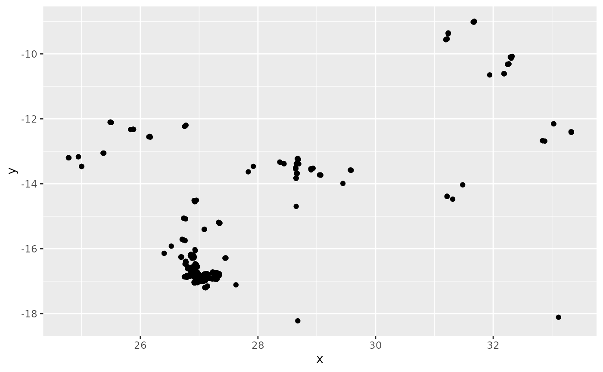
We first cut farmers down to just unique farmer
uuid and coordinates (to avoid duplicate points–remember, there
is more than one observation per farmer for most farmers), and then use
gglot to shows us, in a very crude way, where these points
lie in space. This works, because farmers$x (the longitude)
is exactly analogous to the x coordinate of a scatter plot, and
farmers$y (latitude) is the y coordinate. But it is still
not a spatial object. So, let’s convert it to one, and then plot it
again.
# Chunk 3
# #1
farmers <- st_as_sf(farmers, coords = c("x", "y"))
farmers
#> Simple feature collection with 20984 features and 5 fields
#> Geometry type: POINT
#> Dimension: XY
#> Bounding box: xmin: 24.777 ymin: -18.222 xmax: 33.332 ymax: -8.997
#> CRS: NA
#> # A tibble: 20,984 × 6
#> uuid date season rained planted geometry
#> <chr> <date> <dbl> <dbl> <dbl> <POINT>
#> 1 009a8424 2015-11-15 1 0 0 (27.256 -16.926)
#> 2 00df166f 2015-11-15 1 0 0 (26.942 -16.504)
#> 3 02671a00 2015-11-15 1 0 0 (27.254 -16.914)
#> 4 03f4dcca 2015-11-15 1 0 0 (27.237 -16.733)
#> 5 042cf7b3 2015-11-15 1 0 0 (27.138 -16.807)
#> 6 05618404 2015-11-15 1 0 0 (26.875 -16.611)
#> 7 064beba0 2015-11-15 1 1 0 (26.752 -16.862)
#> 8 083a46a2 2015-11-15 1 0 0 (26.977 -16.765)
#> 9 08eb2224 2015-11-15 1 0 0 (26.912 -16.248)
#> 10 0ab761d6 2015-11-15 1 0 0 (27.113 -16.95)
#> # ℹ 20,974 more rows
#
# #2
str(farmers)
#> sf [20,984 × 6] (S3: sf/tbl_df/tbl/data.frame)
#> $ uuid : chr [1:20984] "009a8424" "00df166f" "02671a00" "03f4dcca" ...
#> $ date : Date[1:20984], format: "2015-11-15" "2015-11-15" "2015-11-15" ...
#> $ season : num [1:20984] 1 1 1 1 1 1 1 1 1 1 ...
#> $ rained : num [1:20984] 0 0 0 0 0 0 1 0 0 0 ...
#> $ planted : num [1:20984] 0 0 0 0 0 0 0 0 0 0 ...
#> $ geometry:sfc_POINT of length 20984; first list element: 'XY' num [1:2] 27.3 -16.9
#> - attr(*, "sf_column")= chr "geometry"
#> - attr(*, "agr")= Factor w/ 3 levels "constant","aggregate",..: NA NA NA NA NA
#> ..- attr(*, "names")= chr [1:5] "uuid" "date" "season" "rained" ...
#
# #2
plot(st_geometry(farmers), pch = 20, cex = 0.5)In #1, we use our first function from sf, which is
st_as_sf, which is used to “convert foreign object to an sf
object” (?st_as_sf). In this case we coerce a
data.frame/tibble into an sf
POINT object, by specifying the x and y coordinates for the “coords”
argument. The summary of farmers, now an sf
object, displays metadata describing the number of features and
variables, the geometry type, the number of dimensions, the object’s
bounding box (bbox), its spatial reference system information (EPSG
string and proj4string; more on these later), which are currently not
set, and then it shows the tibble with values. x
and y no longer occur, and have been replaced by a geometry
column now.
Looking at str in #2, we see the object is constructed
of 4 classes (sf, tbl_df, tbl,
and data.frame), with the geometry variable being of class
sfc_POINT. Please refer back to the how
simple features are organized section on the sf website
to understand how the geometry is structured.
We then plot the new sf object, using
st_geometry to strip out the geometries of this object,
dropping the other variables in the tibble with associated
with the object. The reason for this is that plot
(sf’s generic for plotting sf objects) would
otherwise default to creating one plot panel for each variable in the
tibble. We can see this behavior here:
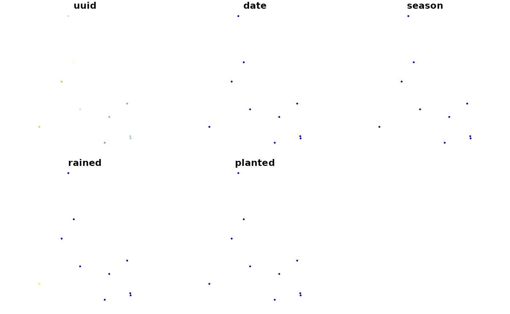
In the above, we illustrate this multi-panel plotting behavior using
just the first 10 rows of farmers, using dplyr
syntax to slice out those rows, in the process illustrating
that sf is designed to work with the
tidyverse.
So, in Chunk 3 above, we have seen how we can coerce the non-spatial
farmers into a spatial object sf. We can
coerce farmers back to an ordinary
data.frame/tibble by simply doing this:
# Chunk 5
farmers %>% as_tibble
#> # A tibble: 20,984 × 6
#> uuid date season rained planted geometry
#> <chr> <date> <dbl> <dbl> <dbl> <POINT>
#> 1 009a8424 2015-11-15 1 0 0 (27.256 -16.926)
#> 2 00df166f 2015-11-15 1 0 0 (26.942 -16.504)
#> 3 02671a00 2015-11-15 1 0 0 (27.254 -16.914)
#> 4 03f4dcca 2015-11-15 1 0 0 (27.237 -16.733)
#> 5 042cf7b3 2015-11-15 1 0 0 (27.138 -16.807)
#> 6 05618404 2015-11-15 1 0 0 (26.875 -16.611)
#> 7 064beba0 2015-11-15 1 1 0 (26.752 -16.862)
#> 8 083a46a2 2015-11-15 1 0 0 (26.977 -16.765)
#> 9 08eb2224 2015-11-15 1 0 0 (26.912 -16.248)
#> 10 0ab761d6 2015-11-15 1 0 0 (27.113 -16.95)
#> # ℹ 20,974 more rowsThis gets us back to a tibble, but the x and
y variables do not reappear, instead we still have the geometry
column. If we want to get back to the original structure of the
tibble, its more complicated:
# Chunk 6
bind_cols(farmers %>% as_tibble %>% select(-geometry),
st_coordinates(farmers) %>% as_tibble) %>%
select(uuid, date, X, Y, season, rained, planted) %>%
rename(x = X, y = Y)
#> # A tibble: 20,984 × 7
#> uuid date x y season rained planted
#> <chr> <date> <dbl> <dbl> <dbl> <dbl> <dbl>
#> 1 009a8424 2015-11-15 27.3 -16.9 1 0 0
#> 2 00df166f 2015-11-15 26.9 -16.5 1 0 0
#> 3 02671a00 2015-11-15 27.3 -16.9 1 0 0
#> 4 03f4dcca 2015-11-15 27.2 -16.7 1 0 0
#> 5 042cf7b3 2015-11-15 27.1 -16.8 1 0 0
#> 6 05618404 2015-11-15 26.9 -16.6 1 0 0
#> 7 064beba0 2015-11-15 26.8 -16.9 1 1 0
#> 8 083a46a2 2015-11-15 27.0 -16.8 1 0 0
#> 9 08eb2224 2015-11-15 26.9 -16.2 1 0 0
#> 10 0ab761d6 2015-11-15 27.1 -17.0 1 0 0
#> # ℹ 20,974 more rowsWe use dplyr syntax to coerce farmers back
to a tibble, dropping the geometry via
negative selection, and then we use dplyr::bind_cols
(equivalent to cbind) to bind the coordinates back to the
tibble. The coordinates are obtained using
st_coordinates, an sf function used to
“retrieve coordinates in matrix form” (?st_coordinate), and
we have to coerce that to a tibble for
bind_cols to work. We can use select to
reorder the columns in their original form, and rename the coordinate
columns back to their original lower case (st_coordinates
returns X and Y columns).
Read and write spatial data
That was a very quick dip into spatial waters, using a points
example. We are going to learn to read and write (in reverse order)
spatial data. We still have farmers back as an sf object.
We are now going to write it out to a spatial file.
# Chunk 6
st_write(obj = farmers, dsn = file.path(tempdir(), "farmers.shp"),
delete_dsn = TRUE)
#> writing: substituting ENGCRS["Undefined Cartesian SRS with unknown unit"] for missing CRS
#> Warning in CPL_write_ogr(obj, dsn, layer, driver, as.character(dataset_options), : GDAL Error 1:
#> /tmp/Rtmphufb6L/farmers.shp does not appear to be a file or directory.
#> Deleting source `/tmp/Rtmphufb6L/farmers.shp' failed
#> Writing layer `farmers' to data source `/tmp/Rtmphufb6L/farmers.shp' using driver `ESRI Shapefile'
#> Writing 20984 features with 5 fields and geometry type Point.
dir(tempdir(), pattern = "farmers")
#> [1] "farmers.dbf" "farmers.prj" "farmers.shp" "farmers.shx"The code above uses st_write to create that old standby,
the ESRI shapefile, that clunky, annoying format that has many files for
one thing. Note that I have the option delete_dsn = TRUE
set, which is needed if the file already exists in that location, and
you want to recreate it (which I did in this case, because I was
re-running this code many times as I wrote this). For
st_write, the “obj” argument asks for the sf
object to write, “dsn” is the name and path for the output file. By
adding the “.shp” at the end of the filename, st_write
knows to use the “ESRI Shapefile” driver. For this example, I used again
the tempdir() function to write this object to a temporary
directory, but, as you follow along, you should change the
file path to correctly lead to your own
xyz246/notebooks/data path.
Looking in the output directory here, we see that there are only three files now (.dbf, .shp, and .shx). We are missing a .prj because of the following reason:
farmers does not have a coordinate reference system
(CRS) associated with it yet, even though we can tell it is in
geographic coordinates. Remember this, because we will come back to
it.
Because .shp is an annoying format, we can try other types. Let’s do the much more convenient “geojson” format, which produces a single file.
# Chunk 8
st_write(obj = farmers, dsn = file.path(tempdir(), "farmers.geojson"),
delete_dsn = TRUE)
#> writing: substituting ENGCRS["Undefined Cartesian SRS with unknown unit"] for missing CRS
#> Deleting source `/tmp/Rtmphufb6L/farmers.geojson' failed
#> Writing layer `farmers' to data source `/tmp/Rtmphufb6L/farmers.geojson' using driver `GeoJSON'
#> Writing 20984 features with 5 fields and geometry type Point.
dir(tempdir(), pattern = "farmers")
#> [1] "farmers.dbf" "farmers.geojson" "farmers.prj" "farmers.shp" "farmers.shx"We see that we have just a single file to hold the .geojson, which is much nicer, and is an increasingly widely used file format, so you should use it whenever possible in place of .shp. However, we will stick with ESRI shapefiles for this class, since they are so widely used still. So let’s read back in from the shapefile itself. I am going the first delete the .geojson version, for the sake of directory cleanliness (having shown you a nicer format, I am not going to work with because so much is still done with
# Chunk 9
file.remove(dir(tempdir(), pattern = "farmers.geojson", full.names = TRUE))
#> [1] TRUE
rm(farmers)
farmers <- st_read(dir(tempdir(), pattern = "farmers.shp", full.names = TRUE))
#> Reading layer `farmers' from data source `/tmp/Rtmphufb6L/farmers.shp' using driver `ESRI Shapefile'
#> Simple feature collection with 20984 features and 5 fields
#> Geometry type: POINT
#> Dimension: XY
#> Bounding box: xmin: 24.777 ymin: -18.222 xmax: 33.332 ymax: -8.997
#> Projected CRS: Undefined Cartesian SRS with unknown unitWe used file.remove to get rid of the .sqlite, and then
used rm to get rid of the existing farmers sf
object, and then read back in the farmers we had written to
the .shp. So we have farmers back again.
Now, there are two more datasets that come with geospaar
to read in using st_read: roads.geojson and
districts.geojson. The paths to both are found with the
system.file function. I’ll set up the first one for
you.
# Chunk 10
fnm <- system.file("extdata/roads.geojson", package = "geospaar")
roads <- st_read(dsn = fnm) #%>% st_set_crs("ESRI:102022")
#> Reading layer `roads' from data source
#> `/opt/R/4.6.1/lib/R/site-library/geospaar/extdata/roads.geojson' using driver `GeoJSON'
#> Simple feature collection with 473 features and 1 field
#> Geometry type: MULTILINESTRING
#> Dimension: XY
#> Bounding box: xmin: -292996.9 ymin: -2108848 xmax: 873238.8 ymax: -1008785
#> Projected CRS: Africa_Albers_Equal_Area_Conic
fnm <- system.file("extdata/districts.geojson", package = "geospaar")
districts <- st_read(dsn = fnm)
#> Reading layer `districts' from data source
#> `/opt/R/4.6.1/lib/R/site-library/geospaar/extdata/districts.geojson' using driver `GeoJSON'
#> Simple feature collection with 72 features and 1 field
#> Geometry type: POLYGON
#> Dimension: XY
#> Bounding box: xmin: 21.99978 ymin: -18.0751 xmax: 33.6875 ymax: -8.226213
#> Geodetic CRS: WGS 84Let’s end this section by a quick look at these data. We are going to
plot districts, roads, and
farmers onto one plot.
# Chunk 11
par(mar = c(0, 0, 0, 0))
plot(st_geometry(districts), col = "grey")
plot(st_geometry(roads), col = "red", add = TRUE)
plot(st_geometry(farmers), pch = 20, reset = FALSE, col = "blue", add = TRUE)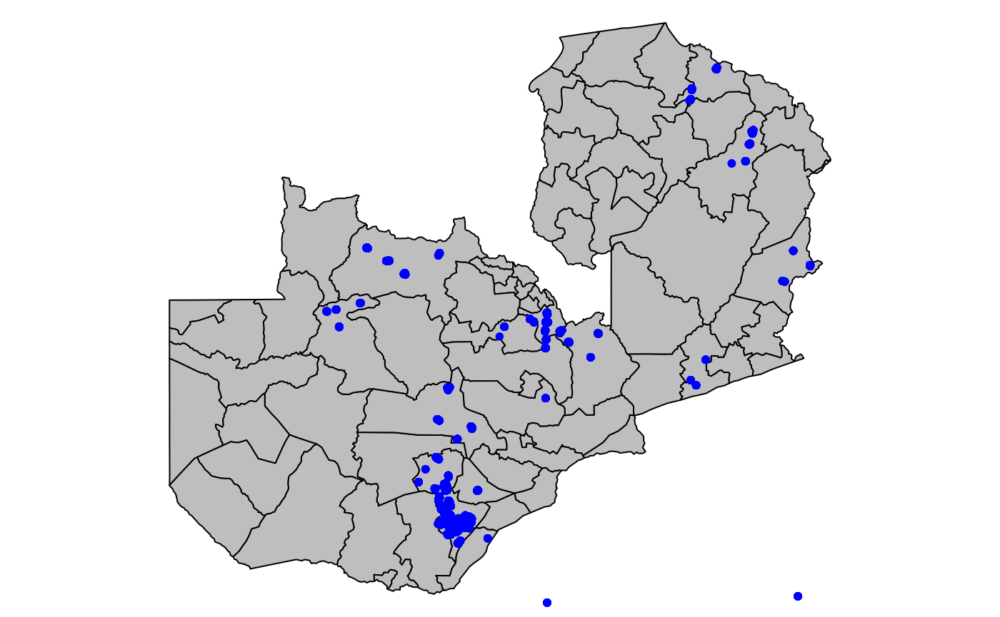
So what have we done? First, we use the par function
with the mar (margin) argument and a 4-element vector of 0s
to remove the inner margins of the plot so that the map of Zambia fills
the plot frame. We then use plot to draw the map of
districts (wrapped in st_geometry, to just
grab the geometry part), which are administrative boundaries for Zambia.
We then use lines to add roads on top of that, making them
red. Finally, we add the farmers data as blue points. Note
the use of add = TRUE, which is necessary to overlay the
two plots on the district boundaries without creating a new
plot of each.
That’s great, you say, but I see no roads in the map.
Where are they? And why are there two farmers outside of Zambia?
We’ll look at that in our next section, but a hint of why can be seen
in the outputs from Chunk 10. You will note that in Chunks 9 and 10 that
st_read (the opposite of st_write) gives a
brief summary of the spatial data being read into R.
Coordinate Reference Systems and Projections
The reason you can’t see the roads on the previous map can be illustrated as follows:
# Chunk 12
sfdat <- list("districts" = districts, "roads" = roads, "farmers" = farmers)
sapply(sfdat, function(x) st_bbox(x))
#> districts roads farmers
#> xmin 21.999775 -292996.9 24.777
#> ymin -18.075097 -2108847.7 -18.222
#> xmax 33.687502 873238.8 33.332
#> ymax -8.226213 -1008785.5 -8.997In the code above, we add our 3 sf objects into a
list (sfdat), and then use sapply
to apply st_bbox to each list element to get their bounding
boxes. That produces an output matrix that shows in the westernmost
(xmin), southernmost (ymin), easternmost (xmax), and northernmost (ymax)
coordinates of each object. This shows us that roads’
coordinates are in different units (meters) than districts’
and farmers’, which are decimal degrees. So when we tried
to plot roads on the same map as districts and
farmers, roads didn’t appear because the units
are not the same. You could get a map of roads if you
plotted them on their own.
Checking the CRS of an sf object
In this case, we have to do a bit more, which is to convert
roads coordinate reference system (CRS) to decimal degrees.
How do we do that? First, we have to know the crs we want to transform
roads into, which we can do by checking the
st_crs of farmers or
districts:
# Chunk 13
st_crs(districts)$proj4string
#> [1] "+proj=longlat +datum=WGS84 +no_defs"
st_crs(roads)$proj4string
#> [1] "+proj=aea +lat_0=0 +lon_0=25 +lat_1=20 +lat_2=-23 +x_0=0 +y_0=0 +datum=WGS84 +units=m +no_defs"We use st_crs, which is sf’s function for
checking and assigning a CRS to an sf object. When you run
it as we have done with st_crs(districts), it returns an
object of class crs (you can verify that by running
class(st_crs(districts))). We see that
districts and roads have different values in
their “PROJCRS” fields, which holds the projection string that contains
the projection parameters of the CRS. If you want to understand the
meaning of projection string parameters, please have a look at the documentation for the proj.4
library, specifically the page on parameters.
This one basically tells us that districts has a
geographic (longlat) projection, and uses the WGS84 datum. Let’s check
the crs for all three objects now, using our old friend
sapply
# Chunk 14
sapply(sfdat, function(x) st_crs(x)$proj4string)
#> districts
#> "+proj=longlat +datum=WGS84 +no_defs"
#> roads
#> "+proj=aea +lat_0=0 +lon_0=25 +lat_1=20 +lat_2=-23 +x_0=0 +y_0=0 +datum=WGS84 +units=m +no_defs"
#> farmers
#> NAThese results show us that farmers does not have a
projection string. So how come it was able to plot on the same map as
districts? Because the coordinates are in the same units.
However, we want to fix that before we move to the next step,
reprojecting:
# Chunk 15
st_crs(farmers) <- st_crs(districts)
#> Warning: st_crs<- : replacing crs does not reproject data; use st_transform for that
st_crs(sfdat$farmers) <- st_crs(districts)
#> Warning: st_crs<- : replacing crs does not reproject data; use st_transform for that
st_crs(sfdat$farmers)$proj4string
#> [1] "+proj=longlat +datum=WGS84 +no_defs"Simple–we apply the fix to farmers and to
sfdat$farmers by assigning each the proj4string from
districts. We can do that because we are pretty sure that
the coordinates for farmers are from a geographic coordinate system that
uses the WGS84 datum. If that is incorrect, we are introducing some
spatial error. But for now, this is fine.
Another note, when running st_crs, we are extracting the
proj4string element from the resulting crs
object. That is because it provides a more compact string representation
of the CRS information. Running st_crs(sfdat$farmers)
produces a much lengthier (and more informative) output in
wkt format. Go ahead and try that.
Reprojecting
Okay, so now we want to change roads to the same CRS as
districts.
# Chunk 16
sfdat$roads <- st_transform(x = sfdat$roads, crs = st_crs(districts))We use sf‘s st_transform function to
reproject sfdat$roads using the parameters supplied by
districts’ p4s, which is passed into the function’s “crs”
argument via the st_crs function applied to
districts.
And that’s all. We can now redo our plots. I am going to show you two
ways to do it. First, the way we have already done it with
sf:plot:
# Chunk 17
par(mar = c(0, 0, 0, 0))
plot(sfdat$districts %>% st_geometry(), col = "grey")
plot(sfdat$roads %>% st_geometry(), col = "red", add = TRUE)
plot(sfdat$farmers %>% st_geometry(), col = "blue", pch = 20, add = TRUE)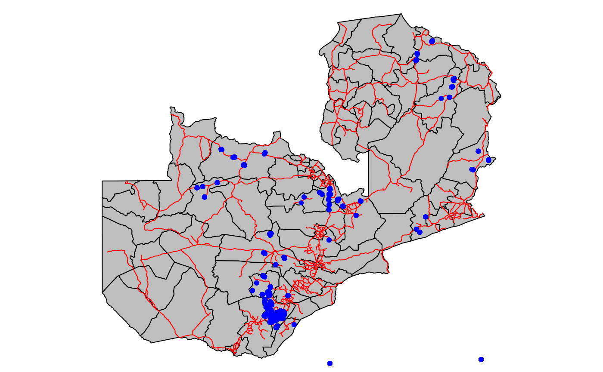
And with ggplot:
# Chunk 18
ggplot(sfdat$districts) + geom_sf() +
geom_sf(data = sfdat$roads, col = "red") +
geom_sf(data = sfdat$farmers, col = "blue")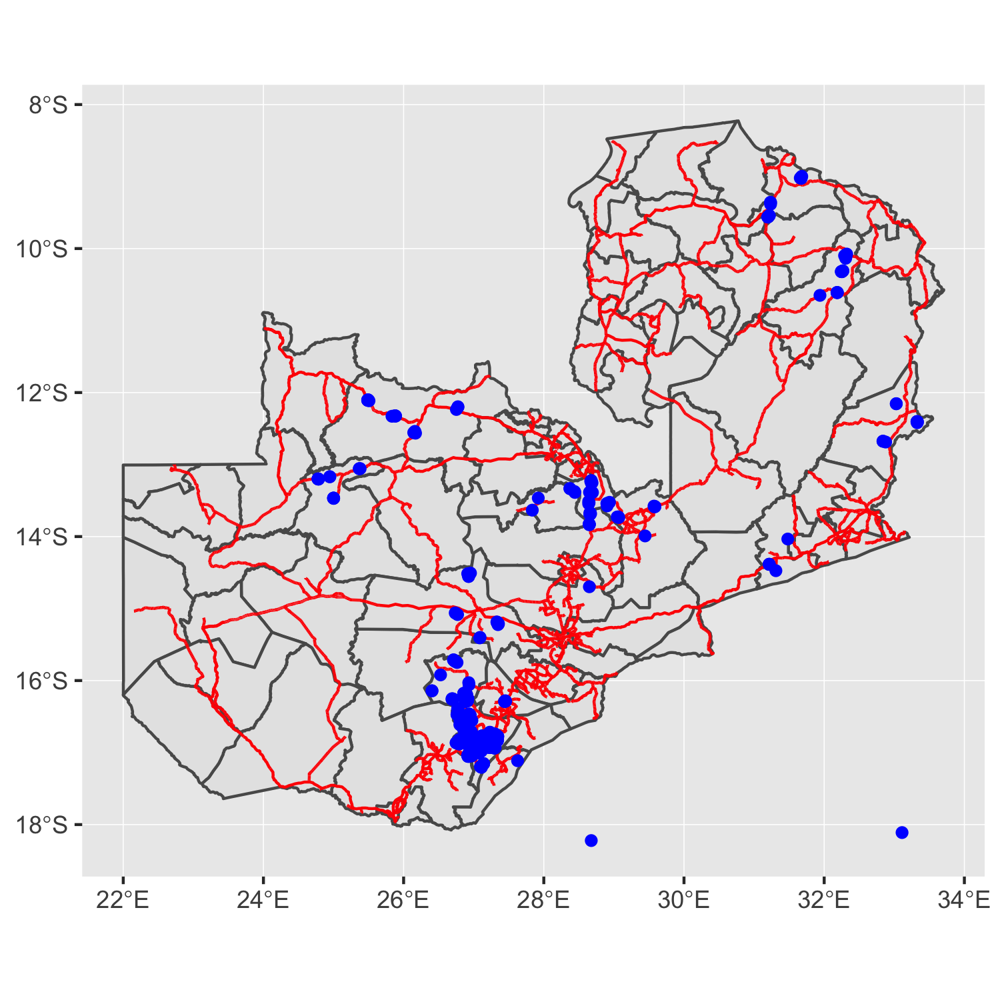
So now you see the roads appearing as red lines on the map.
ggplot adds a coordinate grid to the outside of the plot,
and has a special function geom_sf that is designed to plot
sf geometries. However, it is still substantially slower
than sf::plot for the time being, so we’ll mostly stick
with the latter.
Making simple features from scratch
Before ending this section, it is worth looking at how we can make
our own sf objects from scratch, which we might need to do
from time to time.
# Chunk 19
# #1
pt <- st_point(x = c(28, -14))
pt
#> POINT (28 -14)
#
# #2
pts <- st_multipoint(x = cbind(x = c(27.5, 28, 28.5), y = c(-14.5, -15, -15.5)))
pts
#> MULTIPOINT ((27.5 -14.5), (28 -15), (28.5 -15.5))
#
# #3
sline <- st_linestring(cbind(x = c(27, 27.5, 28), y = c(-15, -15.5, -16)))
sline
#> LINESTRING (27 -15, 27.5 -15.5, 28 -16)
#
# #4
pol <- st_polygon(list(cbind(x = c(26.5, 27.5, 27, 26, 26.5),
y = c(-15.5, -16.5, -17, -16, -15.5))))
pol
#> POLYGON ((26.5 -15.5, 27.5 -16.5, 27 -17, 26 -16, 26.5 -15.5))
#
# 5
par(mar = c(0, 0, 0, 0))
plot(districts %>% st_geometry(), col = "grey")
plot(pt, add = TRUE, col = "red", pch = 20)
plot(pts, add = TRUE, col = "blue", pch = 20)
plot(sline, add = TRUE, col = "cyan", lwd = 2)
plot(pol, add = TRUE, col = "orange", lwd = 2)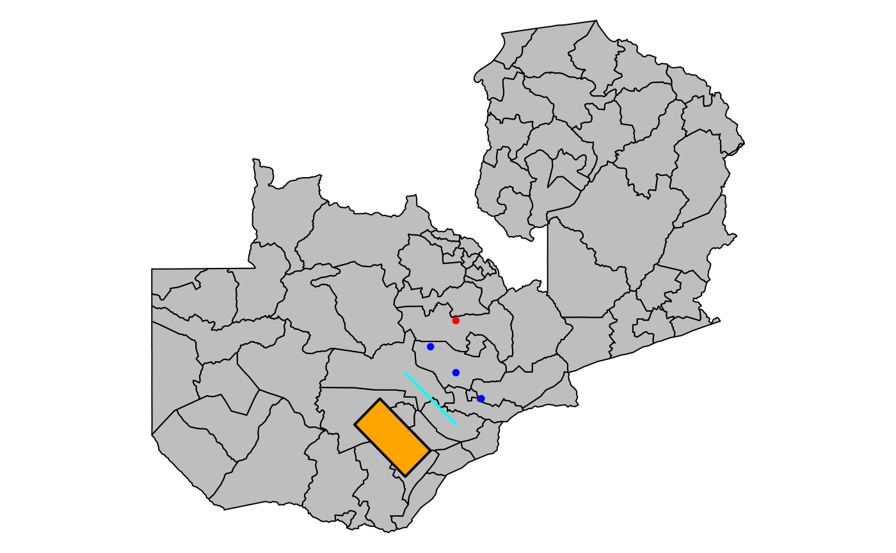
We use st_point in #1 to create a single point object,
based on a two-element vector that consists of the x and y coordinate.
In #2, st_multipoint create an object with three points,
based on an matrix containing the x coordinates in the first column and
y coordinates in second column. #3 convert a similar matrix of
coordinates into an st_linestring, and #4 creates a polygon
object, also using a matrix as input–note that the first and last
coordinates in both the x and y coordinates are the same, which is done
in order to close the polygon. The printout of each sfg
(simple feature geometry) shows that they store coordinates as point
pairs separated by commas (except for pt, since it is just
a single point). In #5 we plot each object over the
districts polygons.
We’ll go bit further in making new features in the section on spatial operations
Practice
Questions
What are the primary simple feature geometry types?
How do you convert a
tibble(ordata.frame) into ansfobject?When plotting (mapping)
sfobjects, what happens if your object has multiple variables?When constructing new
sfobjects, in what format do you have to provide inputs to thest_*constructor functions. How does the input object differ in the case of a POLYGON versus MULTIPOINT or LINESTRING?
Code
Working with the
farmerssfobject, convert it to just a set of points without any other variables.Write out
farmerswith it CRS set to the same asdistrictsinto an sqlite file within yournotebooks/datafolder. Remove thefarmersobject from your workspace, and then read back intoRthe sqlite you just wrote out.Examine the
classandstrofdistrictsandroads.Create a plot of
roads–just the geometries–and make the color of the lines blue.Create a plot of
districts, usingdplyr::selectto choose the distName variable from the objectsdata.frame. Set the title to “Zambia Districts” using the “main” argument. Don’t specify a color.Create an
st_multipointobject using x coordinates ofc(27, 28, 29)and y coordinates ofc(-13, -14, -15), and plot that overdistrictsas orange points.
Spatial properties and attribute fields
We now begin to learn how to perform analyses with spatial vectors, starting with calculating basic spatial properties and manipulating the attribute tables associated with spatial vectors.
As you probably closed this project between Section 1 and 2, you will
also need to reload the roads, districts, and
farmers datasets (coercing the latter back to an
sf object). The code in Section 1
will show you how to do that, but here is some code to recreate most of
what we need:
# Chunk 20
roads <- system.file("extdata/roads.geojson", package = "geospaar") %>% st_read()
#> Reading layer `roads' from data source
#> `/opt/R/4.6.1/lib/R/site-library/geospaar/extdata/roads.geojson' using driver `GeoJSON'
#> Simple feature collection with 473 features and 1 field
#> Geometry type: MULTILINESTRING
#> Dimension: XY
#> Bounding box: xmin: -292996.9 ymin: -2108848 xmax: 873238.8 ymax: -1008785
#> Projected CRS: Africa_Albers_Equal_Area_Conic
districts <- system.file("extdata/districts.geojson", package = "geospaar") %>%
st_read()
#> Reading layer `districts' from data source
#> `/opt/R/4.6.1/lib/R/site-library/geospaar/extdata/districts.geojson' using driver `GeoJSON'
#> Simple feature collection with 72 features and 1 field
#> Geometry type: POLYGON
#> Dimension: XY
#> Bounding box: xmin: 21.99978 ymin: -18.0751 xmax: 33.6875 ymax: -8.226213
#> Geodetic CRS: WGS 84
farmers <- system.file("extdata/farmer_spatial.csv", package = "geospaar") %>%
read_csv() %>% st_as_sf(coords = c("x", "y"), crs = 4326)
#> Rows: 20984 Columns: 7
#> ── Column specification ────────────────────────────────────────────────────────────────────────────
#> Delimiter: ","
#> chr (1): uuid
#> dbl (5): x, y, season, rained, planted
#> date (1): date
#>
#> ℹ Use `spec()` to retrieve the full column specification for this data.
#> ℹ Specify the column types or set `show_col_types = FALSE` to quiet this message.This looks a bit different than what we did before. In this
construction, we make use of dplyr pipes to do everything
in one go for all three datasets. We pipe the file path to
roads.geojson straight to sf::st_read(), and
that reads in it as a one-liner. Same goes for districts
(despite the line break). farmers gets the file path piped
to read_csv, and then the coercion to sf
happens right downstream. We add the crs = 4326 argument to
st_as_sf to provide the missing projection information
(4326 is the EPSG identifier for GCS WGS84)
Spatial properties
First, due to recent changes in sf, and how it handles
spherical geometries, we have to set the following:
sf_use_s2(FALSE)
#> Spherical geometry (s2) switched offOtherwise if we try to calculate lengths or create buffers of vectors that are in geographic coordinates systems, we get odd results.
Area
Using polygons to calculate area is a fairly basic but important
spatial vector operation. To calculate meaningful areas, generally you
need your data to be projected into a coordinate system in which area is
one of the true properties. However, the function we are going to use,
sf::st_area, will estimate area even for data in geographic
coordinates.
# Chunk 21
# #1
dist_areas <- districts %>% st_area()
dist_areas
#
# #2
dist_areas %>% units::set_units("ha")
#
# #3
dist_areas %>% units::set_units("km^2")
#> Units: [m^2]
#> [1] 2541541123 17400358599 4582302550 13430066296 3776028206 1010088275 4322221463 1722869287
#> [9] 15450492474 6177649097 7024667808 12002517947 3897818272 8852821646 15709144162 14530277901
#> [17] 1538935802 5779096160 17190620898 13936688829 1033321749 22983082040 17018945020 12738258307
#> [25] 10506878898 21515089682 3902545467 9223150982 18279181139 790565464 732688105 3869918418
#> [33] 921820643 11410004516 15759475788 14029544835 420504470 9833501774 5904580341 9659629715
#> [41] 3561571068 6743655796 8541546325 6188067741 17645065702 9919976404 4836298974 40093367520
#> [49] 8506242709 11966022532 9999324386 1260883094 19250963202 21495042874 9816701410 6774772311
#> [57] 20788856165 4702820132 5668360761 4316726948 974238354 10559381963 8284547079 10029114031
#> [65] 15538334760 23588837220 29837388878 16213151511 3924832242 4775308805 30067585050 14071033674
#> Units: [ha]
#> [1] 254154.11 1740035.86 458230.26 1343006.63 377602.82 101008.83 432222.15 172286.93
#> [9] 1545049.25 617764.91 702466.78 1200251.79 389781.83 885282.16 1570914.42 1453027.79
#> [17] 153893.58 577909.62 1719062.09 1393668.88 103332.17 2298308.20 1701894.50 1273825.83
#> [25] 1050687.89 2151508.97 390254.55 922315.10 1827918.11 79056.55 73268.81 386991.84
#> [33] 92182.06 1141000.45 1575947.58 1402954.48 42050.45 983350.18 590458.03 965962.97
#> [41] 356157.11 674365.58 854154.63 618806.77 1764506.57 991997.64 483629.90 4009336.75
#> [49] 850624.27 1196602.25 999932.44 126088.31 1925096.32 2149504.29 981670.14 677477.23
#> [57] 2078885.62 470282.01 566836.08 431672.69 97423.84 1055938.20 828454.71 1002911.40
#> [65] 1553833.48 2358883.72 2983738.89 1621315.15 392483.22 477530.88 3006758.50 1407103.37
#> Units: [km^2]
#> [1] 2541.5411 17400.3586 4582.3026 13430.0663 3776.0282 1010.0883 4322.2215 1722.8693
#> [9] 15450.4925 6177.6491 7024.6678 12002.5179 3897.8183 8852.8216 15709.1442 14530.2779
#> [17] 1538.9358 5779.0962 17190.6209 13936.6888 1033.3217 22983.0820 17018.9450 12738.2583
#> [25] 10506.8789 21515.0897 3902.5455 9223.1510 18279.1811 790.5655 732.6881 3869.9184
#> [33] 921.8206 11410.0045 15759.4758 14029.5448 420.5045 9833.5018 5904.5803 9659.6297
#> [41] 3561.5711 6743.6558 8541.5463 6188.0677 17645.0657 9919.9764 4836.2990 40093.3675
#> [49] 8506.2427 11966.0225 9999.3244 1260.8831 19250.9632 21495.0429 9816.7014 6774.7723
#> [57] 20788.8562 4702.8201 5668.3608 4316.7269 974.2384 10559.3820 8284.5471 10029.1140
#> [65] 15538.3348 23588.8372 29837.3889 16213.1515 3924.8322 4775.3088 30067.5850 14071.0337Very simple to calculate area for each polygon in
districts. Note that the default is to calculate
m,
but we can change that to hectares (in #2) using or
km
(#3) using the function units::set_units (the
units package is imported by sf).
So this was an estimate of area from a non-project dataset. How does
that compare to area from a true equal area projection, such as the
Albers Equal Area projection that roads is projected
in:
# Chunk 21
dist_areas_alb <- districts %>%
st_transform(crs = st_crs(roads)) %>%
st_area()
absd <- mean(abs(dist_areas_alb - dist_areas)) %>% units::set_units("ha")
pctd <- as.numeric(absd / (mean(dist_areas_alb) / 10000)) * 100
absd
#> 16.50778 [ha]
pctd
#> [1] 0.001581902Using st_transform with the CRS from roads
to reproject district, and then calculate polygons areas,
we see the mean absolute difference between areas calculated from the
projected and unprojected datasets is around 17 ha, which is a tiny
percentage (0.002%) of the average district area. Not much to write home
about, but also not nothing if absolute accuracy of area calculations is
your interest.
# Chunk 22
districts %>%
st_area() %>% units::set_units("km^2") %>%
as.numeric() %>%
tibble(km2 = .) %>%
ggplot() +
geom_histogram(aes(x = km2), bins = 15, fill = "blue", col = "grey") +
xlab(bquote("km"^2))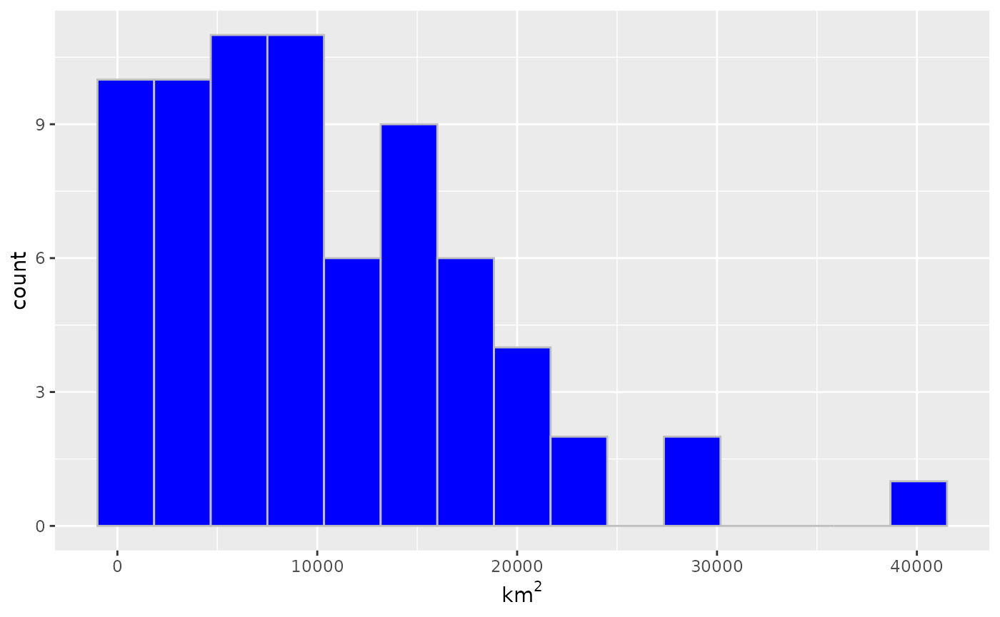
Here’s a look at the district areas (in
km)
as a histogram. Notice the conversion steps. First we wanted to convert
the calculated areas to a numeric vector (rather than one of class
units), using as.numeric, then we made it into
a tibble, because ggplot only works with
data.frame, and then we plotted the histogram. There is one
new addition there–in xlab, we use bquote to
print a superscript 2 in the
km
axis label.
Distance
We can also calculate the distances between spatial features. To do
that, we are make use of st_centroid on the
Albers-projected districts data, which we use to find the
central coordinates of each district, and then plot the centroids on top
of the districts themselves.
# Chunk 23
# # 1
dist_cent <- districts %>%
st_transform(., st_crs(roads)) %>%
st_centroid()
#> Warning: st_centroid assumes attributes are constant over geometries
# dist_cent <- st_centroid(st_transform(districts, st_crs(roads))) # equivalent
# #2
par(mar = c(0, 0, 0, 0))
districts %>%
st_transform(., st_crs(roads)) %>%
st_geometry() %>%
plot(col = "grey")
dist_cent %>%
st_geometry() %>%
plot(col = "red", pch = 20, add = TRUE)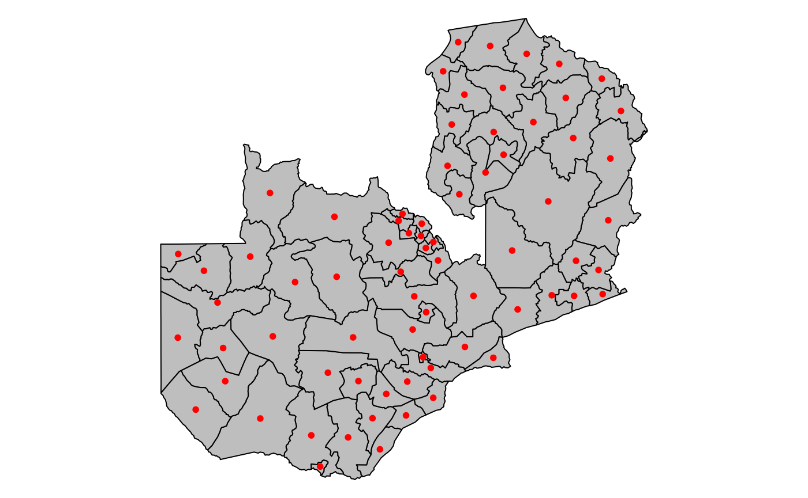
Notice that right below the centroid calculation pipeline (#1) is a
commented out line, which is the non-pipeline equivalent of the
operation. In #2, we make the plots, setting up the plotting functions
for both the districts polygons and their centroids on the
downstream ends of pipelines.
Moving on, we can now find out how far apart the centroids of each
district are by using another sf function,
st_distance
# Chunk 24
# #1
all_dists <- st_distance(x = dist_cent)
all_dists[1:5, 1:5]
#> Units: [m]
#> 1 2 3 4 5
#> 1 0.0 337312.0 1055917.1 478760.8 720655.9
#> 2 337312.0 0.0 1096240.8 648169.0 474828.6
#> 3 1055917.1 1096240.8 0.0 610097.6 870220.6
#> 4 478760.8 648169.0 610097.6 0.0 722235.2
#> 5 720655.9 474828.6 870220.6 722235.2 0.0
#
# #2
d1_dists <- st_distance(x = dist_cent[1, ], y = dist_cent[-1, ])
d1_dists %>% as.vector()
#> [1] 337312.02 1055917.11 478760.82 720655.95 534294.34 424233.93 537038.59 394271.13
#> [9] 60771.97 647975.79 365570.77 572547.13 456994.22 707936.13 877925.34 439308.17
#> [17] 463462.46 1057787.83 723943.46 503236.39 823650.12 466690.03 676122.70 460293.36
#> [25] 660199.63 70921.71 602126.69 802364.10 472548.68 820294.77 313591.52 452687.70
#> [33] 545220.16 954001.09 183780.14 471634.00 484560.25 105916.50 498981.34 416246.64
#> [41] 530454.02 581636.89 432948.27 319919.14 949478.15 590476.65 266675.75 503209.41
#> [49] 568630.85 625518.68 481062.92 762430.62 627377.88 495646.68 563040.80 861407.52
#> [57] 534885.88 642334.34 679783.92 438765.43 213904.48 126110.47 418765.15 959450.54
#> [65] 249013.82 902522.44 1047859.81 492293.96 672884.59 691456.78 989244.25
#
# #3
d1_dists %>%
as.vector() %>%
quantile() / 1000
#> 0% 25% 50% 75% 100%
#> 60.77197 439.03680 534.29434 685.62035 1057.78783There are two variants above. The first (#1) is captured in
all_dists, and it produces a matrix that provides the
distance, in meters, between each district centroid and every other
district centroid (we show the first 5 rows and 5 columns of the matrix,
otherwise it is 72X72). To get that, you simply pass in the
dist_cent object into to the “x” argument. The second
variant (#2) (d1_dists), uses both “x” and “y” arguments,
and it simply finds the distance between the first district centroid and
all the other districts’ centroids. We coerce the matrix to a vector for
more compact printing. In #3, we summarize d1_dists using
the quantile function, converting meters to kilometers.
Length
For the last example of functions that extract spatial properties, we will calculate the line lengths and perimeters.
# Chunk 25
# #1
road_length <- st_length(roads) %>% as.numeric()
#
# #2
dist_perims <- st_length(districts) %>% as.numeric()
#
# #3
p1 <- ggplot(tibble(x = road_length), aes(x / 1000)) +
geom_histogram(fill = "blue", col = "grey", bins = 15) + xlab("km") +
ggtitle("Zambia road lengths")
p2 <- ggplot(tibble(x = dist_perims), aes(x / 1000)) +
geom_histogram(fill = "purple", col = "grey", bins = 10) + xlab("km") +
ylab("") + ggtitle("Zambia district perimeters")
cowplot::plot_grid(p1, p2)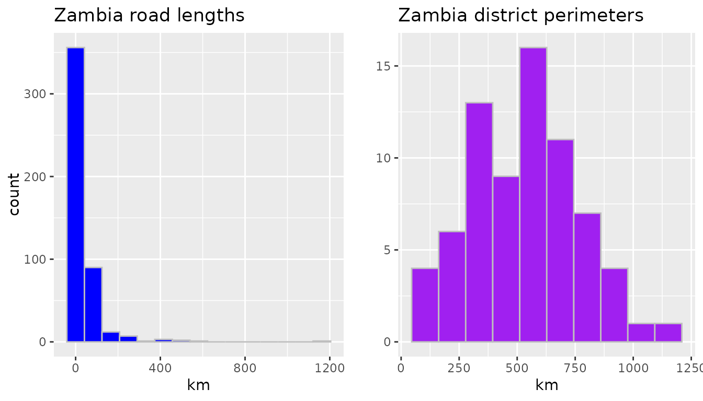
We use st_length to calculate the length of the line
segments in roads (#1) and the perimeter length of the
polygons in district (#2), converting both to numeric
vectors. We then plot each set of lengths as histograms (#3), converting
units to kilometers (by dividing by 1000, within
geom_histogram), and then use
cowplot::plot_grid to arrange the two histograms
side-by-side.
Manipulating attributes
sf objects stores attributes as data.frames
or tibbles, and they can be manipulated using the same
preparatory and analytical methods we learned about in the previous
modules. For example, let’s consider some very basic subsetting:
# Chunk 26
par(mar = c(0, 0, 0, 0))
st_geometry(districts) %>% plot(col = "grey")
districts %>%
slice(1, 20, 40) %>%
plot(col = "blue", add = TRUE)
set.seed(123)
farmers %>%
sample_n(20) %>%
st_geometry() %>%
plot(col = "yellow", pch = "+", add = TRUE)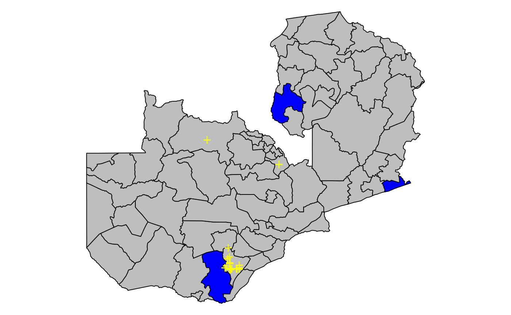
Notice the use of dplyr verbs to subset two datasets on
the fly before they are piped into plot. The plot as setup
with all districts as a backdrop (using
st_geometry to strip away the attribute table), and then we
overlay on that in blue the 1st, 20th, and 40th district,
sliced out of districts. On top of that, we
take a random sample of 20 observations from farmers, and
plot those on top. You can also index into the sf objects
with []:
# Chunk 27
par(mar = c(0, 0, 0, 0))
plot(st_geometry(districts), col = "grey")
plot(districts[c(1, 20, 40), ], col = "blue", add = TRUE)
set.seed(123)
plot(st_geometry(farmers[sample(1:nrow(farmers), 20), ]), col = "yellow",
pch = "+", add = TRUE)The code above makes the identical plot as in Chunk 26, so we don’t display that again, but note the indexing, as well as the lack of piping and more conventional syntax.
Mutating and joining
The Spatial Properties showed how
to calculate area, length, and other properties as separate outputs. Why
not add them stick them in separate data objects. Now let’s see how to
add those properties back the sf attribute
tibble.
# Chunk 27
districts %>% mutate(area = as.numeric(st_area(.) / 10^6))
#> Simple feature collection with 72 features and 2 fields
#> Geometry type: POLYGON
#> Dimension: XY
#> Bounding box: xmin: 21.99978 ymin: -18.0751 xmax: 33.6875 ymax: -8.226213
#> Geodetic CRS: WGS 84
#> First 10 features:
#> distName geometry area
#> 1 Chadiza POLYGON ((32.3076 -14.3128,... 2541.541
#> 2 Chama POLYGON ((33.6875 -10.57932... 17400.359
#> 3 Chavuma POLYGON ((22.00014 -13.4776... 4582.303
#> 4 Chibombo POLYGON ((28.89229 -14.7998... 13430.066
#> 5 Chiengi POLYGON ((29.1088 -9.079298... 3776.028
#> 6 Chililabombwe POLYGON ((28.06755 -12.3526... 1010.088
#> 7 Chilubi POLYGON ((30.61853 -11.2516... 4322.221
#> 8 Chingola POLYGON ((27.51766 -12.2984... 1722.869
#> 9 Chinsali POLYGON ((32.34814 -9.74577... 15450.492
#> 10 Chipata POLYGON ((32.95348 -13.2636... 6177.649So that’s a fairly straightforward way to do it. Just use
mutate with st_area (note that
st_area needs the . in it to function
correctly). In making a new area column, we divide by
10
to convert to
km,
and coerce the result to numeric.
Imagine that someone gave you a separate dataset that simply listed district names and their areas for Zambia, but provided no other spatial information. Say they did something like this:
# Chunk 28
dist_area <- tibble(distName = districts$distName,
area = as.numeric(st_area(districts)) / 10^6)We could use a *_join to merge this onto
districts:
# Chunk 29
left_join(districts, dist_area, by = "distName")
#> Simple feature collection with 72 features and 2 fields
#> Geometry type: POLYGON
#> Dimension: XY
#> Bounding box: xmin: 21.99978 ymin: -18.0751 xmax: 33.6875 ymax: -8.226213
#> Geodetic CRS: WGS 84
#> First 10 features:
#> distName area geometry
#> 1 Chadiza 2541.541 POLYGON ((32.3076 -14.3128,...
#> 2 Chama 17400.359 POLYGON ((33.6875 -10.57932...
#> 3 Chavuma 4582.303 POLYGON ((22.00014 -13.4776...
#> 4 Chibombo 13430.066 POLYGON ((28.89229 -14.7998...
#> 5 Chiengi 3776.028 POLYGON ((29.1088 -9.079298...
#> 6 Chililabombwe 1010.088 POLYGON ((28.06755 -12.3526...
#> 7 Chilubi 4322.221 POLYGON ((30.61853 -11.2516...
#> 8 Chingola 1722.869 POLYGON ((27.51766 -12.2984...
#> 9 Chinsali 15450.492 POLYGON ((32.34814 -9.74577...
#> 10 Chipata 6177.649 POLYGON ((32.95348 -13.2636...In this case a left_join works because the number of
records is identical and each row in each dataset has a unique district
name.
More subsetting
We have already done a bit of this a couple of sections back, but let’s use this opportunity to do a bit more subsetting, including a previously unseen approach:
# Chunk 30
# #1
kanyi_dists <- districts %>% filter(grepl("^Ka|^Nyi", distName))
#
# #2
dists_gt2m <- districts %>% filter(as.numeric(st_area(.) / 10^6) > 20000)
par(mar = c(0, 0, 0, 0))
plot(st_geometry(districts), col = "grey")
plot(st_geometry(kanyi_dists), col = rgb(0, 0, 1, alpha = 0.5), add = TRUE)
plot(st_geometry(dists_gt2m), col = rgb(1, 0, 0, alpha = 0.5), add = TRUE)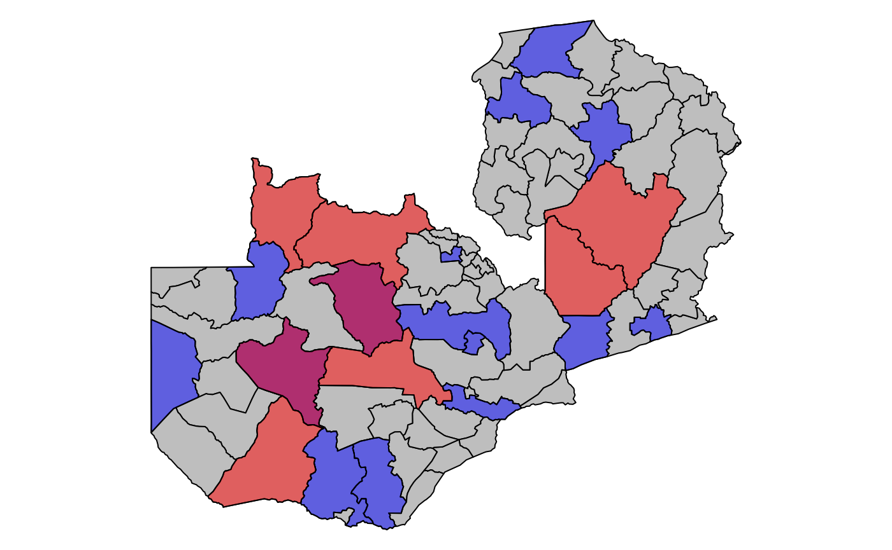
That’s two examples of subsetting that that are accomplished with
filter. #1 is the new one, as it uses grepl to
select districts with names beginning with either “Ka” or “Nyi”.
grepl is one of several functions that make use of regular
expressions to identify and do things (select, substitute, split, etc)
to string variables. You can read up more on the subject by starting
with ?grepl and ?regex. Regular expressions
are quite powerful, and although they can be somewhat arcane, they are
well worth learning (although we don’t do much with them here). #2
creates dists_gt2m) by calculating area within
filter on the fly, and using that to select districts
>20000
km.
The resulting subsets are plotted onto the full district map of Zambia,
using another function appearing for the first time in
geospaar, rgb, which we use to define the
colors for filling the polygons. rgb makes red-green-blue
color combinations, and the alpha argument allows us to define how
transparent the colors are. In this case, our two subsets selected some
of the same polygons (two of the districts with names beginning with
“Ka” or “Ny” are also larger than 20,000
km),
thus the partial transparency is needed to show where the overlaps
occur.
Split-apply-combine
As with plain old data.frames, we might want to do
split-apply-combine operations on spatial data. Let’s demonstrate this
selecting the districts in districts_alb2 that fall within
certain area ranges, convert the selected districts to centroid points,
and then plot them.
# Chunk 30
# #1
tertiles <- function(x) quantile(x, probs = c(0, 0.333, 0.667, 1))
dist_tertiles <- districts %>%
mutate(area = as.numeric(st_area(.)) / 10^6) %>%
mutate(acls = cut(area, breaks = tertiles(area), include.lowest = TRUE)) %>%
group_by(acls) %>%
summarize(mean_area = mean(area))
#> although coordinates are longitude/latitude, st_union assumes that they are planar
dist_tertiles
#> Simple feature collection with 3 features and 2 fields
#> Geometry type: GEOMETRY
#> Dimension: XY
#> Bounding box: xmin: 21.99978 ymin: -18.0751 xmax: 33.6875 ymax: -8.226213
#> Geodetic CRS: WGS 84
#> # A tibble: 3 × 3
#> acls mean_area geometry
#> <fct> <dbl> <GEOMETRY [°]>
#> 1 [421,5.74e+03] 2879. MULTIPOLYGON (((25.67506 -17.82137, 25.62197 -17.85003, 25.61785 -17…
#> 2 (5.74e+03,1.3e+04] 9018. MULTIPOLYGON (((27.09117 -16.41171, 27.11665 -16.46667, 27.33603 -16…
#> 3 (1.3e+04,4.01e+04] 19409. POLYGON ((26.29328 -17.9525, 26.27136 -17.9349, 26.23261 -17.9344, 2…
#
# #2
par(mar = rep(0, 4))
plot(st_geometry(dist_tertiles), col = c("red", "purple", "blue"))
legend(x = "bottomright", pch = 15, col = c("red", "purple", "blue"),
bty = "n", legend = c("Bottom third", "Middle third", "Largest third"))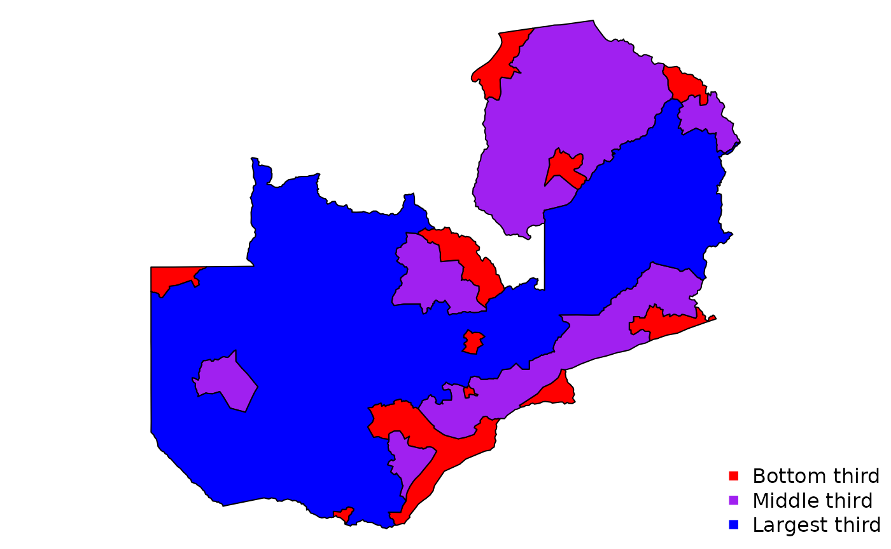
The above is a dplyr-based split-apply-combine, which
has a fair bit going on, so let’s explain:
- We first create a new function called
tertiles, which will divide any vectorxit is given into thirds. - In the pipeline, the first line does the usual creation of an
area variable. The second line use the
cutfunction (see?cut) to classify the area variable into thirds (i.e. districts whose areas are below the 33rd percentile area, those between the 33rd and 66th percentile areas, and those above the 66th percentile), using ourtertilefunction, resulting in a newaclsvariable. - The third line in the pipeline groups the data by
acls, and then calculates the mean area of each group. Thissummarizeis spatial, in that it aggregates (dissolves) the polygons that are in group into a single large polygon for each group, while creating an output value describing the average area of the districts that were unioned to make each group. This is achieved by a genericsummarizemethod defined forsf(see?summarise.sf). - The
plotshows the result of the union (plus a legend that we add)
We can do the same thing for standard deviation, but using a quintile grouping:
# Chunk 31
quintiles <- function(x) quantile(x, probs = seq(0, 1, 0.2))
dist_quintiles <- districts %>%
mutate(area = as.numeric(st_area(.)) / 10^6) %>%
mutate(acls = cut(area, breaks = quintiles(area), include.lowest = TRUE)) %>%
group_by(acls) %>%
summarize(sd_area = sd(area))
#> although coordinates are longitude/latitude, st_union assumes that they are planar
dist_quintiles
#> Simple feature collection with 5 features and 2 fields
#> Geometry type: GEOMETRY
#> Dimension: XY
#> Bounding box: xmin: 21.99978 ymin: -18.0751 xmax: 33.6875 ymax: -8.226213
#> Geodetic CRS: WGS 84
#> # A tibble: 5 × 3
#> acls sd_area geometry
#> <fct> <dbl> <GEOMETRY [°]>
#> 1 [421,3.9e+03] 1289. MULTIPOLYGON (((25.68999 -17.84936, 25.67506 -17.82137, 25.62197 -17.…
#> 2 (3.9e+03,6.76e+03] 924. MULTIPOLYGON (((27.53664 -17.42417, 27.45355 -17.49169, 27.41875 -17.…
#> 3 (6.76e+03,1.05e+04] 1137. MULTIPOLYGON (((27.10854 -16.33371, 27.09117 -16.41171, 27.11665 -16.…
#> 4 (1.05e+04,1.61e+04] 1702. MULTIPOLYGON (((26.71123 -16.46183, 26.70489 -16.49016, 26.71565 -16.…
#> 5 (1.61e+04,4.01e+04] 6555. POLYGON ((26.02423 -16.61146, 26.02976 -16.69325, 26.08744 -16.69583,…
cols <- heat.colors(5)
par(mar = rep(0, 4))
plot(st_geometry(dist_quintiles), col = cols)
legend(x = "bottomright", pch = 15, col = cols, bty = "n",
legend = paste0(1:5, c("st", "nd", "rd", "th", "th"), " quantile"))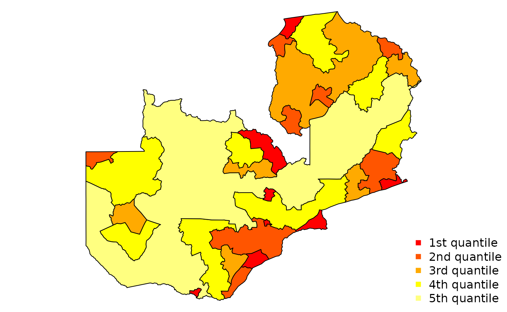
Our plot in this case uses the heat.colors() function
for filling the polygons.
That was a quick introduction to SAC for sf. There are
others we could do (you can visit the tidyverse
examples page for sf to see some others), but we will
move on to the learn about other spatial operations now.
Practice
Questions
How different are areas calculated using projected and unprojected (geographic) coordinate systems when using
st_area? How comest_area“knows” how to calculate an area in m when the CRS is unprojected (the answer isn’t in the material above, but can be found if you read through?st_area)?You will note that we haven’t used
ggplot() + geom_sf()in this section. Why is that?How can we create a grouping variable that we can use to split an
sfobject according to different levels of spatial properties (e.g. area)?
Code
Using a seed of 1, randomly select (
sample_n) 10 districts fromdistrictsand calculate their average area in hectares.Using a seed of 1, randomly select (
sample_n) 100 road segments fromroadsand calculate their average length in kilometers.Plot districts with a “lightgrey” background, and then randomly select (seed of 1) 200 observations from farmers from the second season, and plot them as red circles over
districts.From
roadselect the roads that have lengths between 50 and 100 km and plot those in red over districts. Note thatdistrictsandroadsare in different projections, so transformdistrictto have the same CRS asroadsfirst.Hack the code in Chunk 31 to create a map of districts merged by their deciles of area. Do the summary by total area. To do this, the
quantilefunction will have to be altered (passseq(0, 1, 0.1)to “probs”), and make sure your color vector has enough values.
Spatial Operations
In this section we will focus on some of the more common polygon-based spatial operations. To enable this, we are first going to create some additional spatial data.
# Chunk 32
# #1
coords <- cbind("x" = c(25, 25.1, 26.4, 26.4, 26.4, 25),
"y" = c(-15.5, -14.5, -14.6, -14.8, -15.6, -15.5))
#
# #2
pol <- st_polygon(x = list(coords)) %>%
st_sfc %>%
st_sf(ID = 1, crs = 4326)
pol
#> Simple feature collection with 1 feature and 1 field
#> Geometry type: POLYGON
#> Dimension: XY
#> Bounding box: xmin: 25 ymin: -15.6 xmax: 26.4 ymax: -14.5
#> Geodetic CRS: WGS 84
#> ID .
#> 1 1 POLYGON ((25 -15.5, 25.1 -1...
par(mar = rep(0, 4))
plot(st_geometry(districts), col = "grey")
plot(pol, col = "purple", add = TRUE)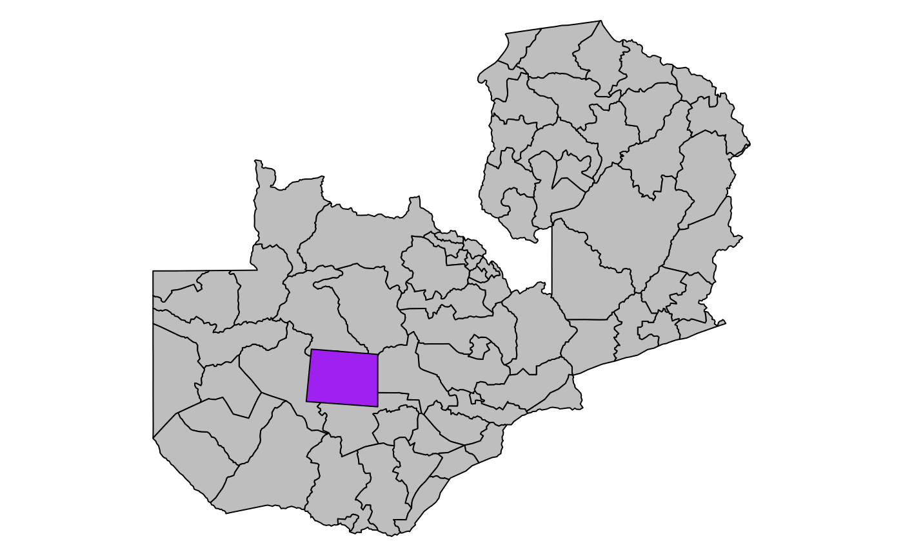
The above takes coords, a matrix of x and y
coordinates (#1), and repeats the approach we used in Chunk 19 (Section
3.6) to create an st_polygon (#2), but then continues on to
convert that to a simple feature geometry list column
(st_sfc), then to create an sf, a
“data.frame-like object…with a simple feature list column”
(?st_sf), including the assignment of a CRS. That’s how you
build up a full simple feature with attributes.
Overlays/spatial queries
The first thing we will do with our made-up polygon is figure out which districts it intersects. What we are going to do in this case is the ArcGIS equivalent of select by spatial location (if I remember my ESRI terminology correctly–it’s been a while since I looked at it)
# Chunk 32
# #1
st_intersects(x = pol, y = districts)
#> although coordinates are longitude/latitude, st_intersects assumes that they are planar
#> Sparse geometry binary predicate list of length 1, where the predicate was `intersects'
#> 1: 15, 22, 26, 53, 54
#
# #2
dists_int <- districts %>% slice(st_intersects(x = pol, y = districts)[[1]])
#> although coordinates are longitude/latitude, st_intersects assumes that they are planar
dists_int
#> Simple feature collection with 5 features and 1 field
#> Geometry type: POLYGON
#> Dimension: XY
#> Bounding box: xmin: 23.68492 ymin: -16.55543 xmax: 27.96308 ymax: -12.8613
#> Geodetic CRS: WGS 84
#> distName geometry
#> 1 Itezhi Tezhi POLYGON ((25.31517 -15.2849...
#> 2 Kaoma POLYGON ((25.59041 -14.5366...
#> 3 Kasempa POLYGON ((26.87956 -13.4341...
#> 4 Mufumbwe POLYGON ((25.57661 -12.9764...
#> 5 Mumbwa POLYGON ((27.18799 -14.3719...
#
# #3
par(mar = rep(0, 4))
plot(st_geometry(districts), col = "grey")
plot(st_geometry(dists_int), col = "blue", add = TRUE)
plot(st_geometry(pol), border = "purple", add = TRUE)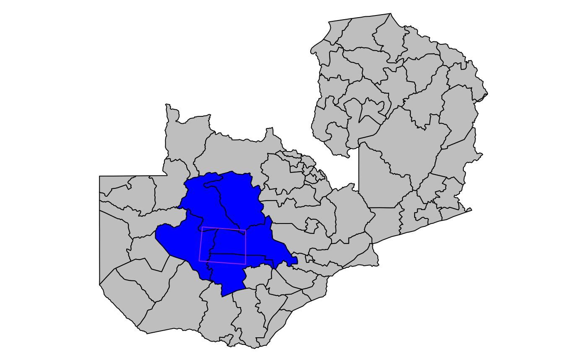
In #1 we use st_intersects to identify the indices of
the districts that intersect pol. So that
doesn’t give us back the actual intersecting district polygons. To get
those, we have to do a bit more. The output from
st_intersects is a list object, which contains the index of
the polygon in x (the “1:” in the output) followed by the polygons in
the object passed to y that it intersects (15, 22, 26, 53, 54). We can
simplify that results to a vector by specifying the list index we want
(1): st_intersects(x = pol, y = districts)[[1]]. We plug
that into slice in #2 to pull out the polygons from
districts into a new object dists_int, and
then #3 illustrates the intersected districts in blue.
Intersecting
We have just seen how st_intersects can be used to
identify and extract intersecting polygons. Now let’s look at what
st_intersection does.
# Chunk 33
pol_int_dists <- st_intersection(x = pol, y = districts)
#> although coordinates are longitude/latitude, st_intersection assumes that they are planar
#> Warning: attribute variables are assumed to be spatially constant throughout all geometries
par(mar = rep(0, 4))
plot(st_geometry(districts), col = "grey")
plot(st_geometry(pol_int_dists), col = rainbow(n = nrow(pol_int_dists)),
add = TRUE)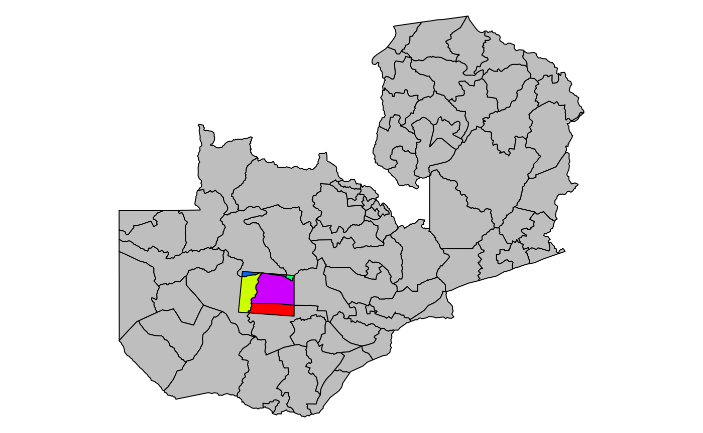
Seems pretty clear what st_intersection does, and how it
differs from st_intersects: it crops the intersected
districts to the boundaries of pol, and returns the
intersected district polygons. It also spits out a warning about the
attribute variable being spatially constant, as well as the usual
warning about the data not being in planar coordinates. We also
introduced another color function (rainbow) to distinguish
the different intersected districts.
Aggregating/Dissolving
Now that we have intersected boundaries, let’s dissolve them. We’ve actually already seen this (in section 4.2.3), but let’s have a second look:
# Chunk 34
# #1
pol_int_dists %>% summarize
#> although coordinates are longitude/latitude, st_union assumes that they are planar
#> Simple feature collection with 1 feature and 0 fields
#> Geometry type: POLYGON
#> Dimension: XY
#> Bounding box: xmin: 25 ymin: -15.6 xmax: 26.4 ymax: -14.5
#> Geodetic CRS: WGS 84
#> .
#> 1 POLYGON ((25 -15.5, 25.0872...
#
# #2
pol_int_muarea <- pol_int_dists %>%
mutate(area = as.numeric(units::set_units(st_area(.), "km^2"))) %>%
summarize(area = mean(area))
#> although coordinates are longitude/latitude, st_union assumes that they are planar
pol_int_muarea
#> Simple feature collection with 1 feature and 1 field
#> Geometry type: POLYGON
#> Dimension: XY
#> Bounding box: xmin: 25 ymin: -15.6 xmax: 26.4 ymax: -14.5
#> Geodetic CRS: WGS 84
#> area .
#> 1 3225.024 POLYGON ((25 -15.5, 25.0872...
par(mfrow = c(1, 2))
pol_int_dists %>%
st_geometry() %>%
plot(col = rainbow(n = nrow(pol_int_dists)), main = "Intersections")
pol_int_muarea %>%
st_geometry() %>%
plot(col = "blue", main = "Dissolved intersections")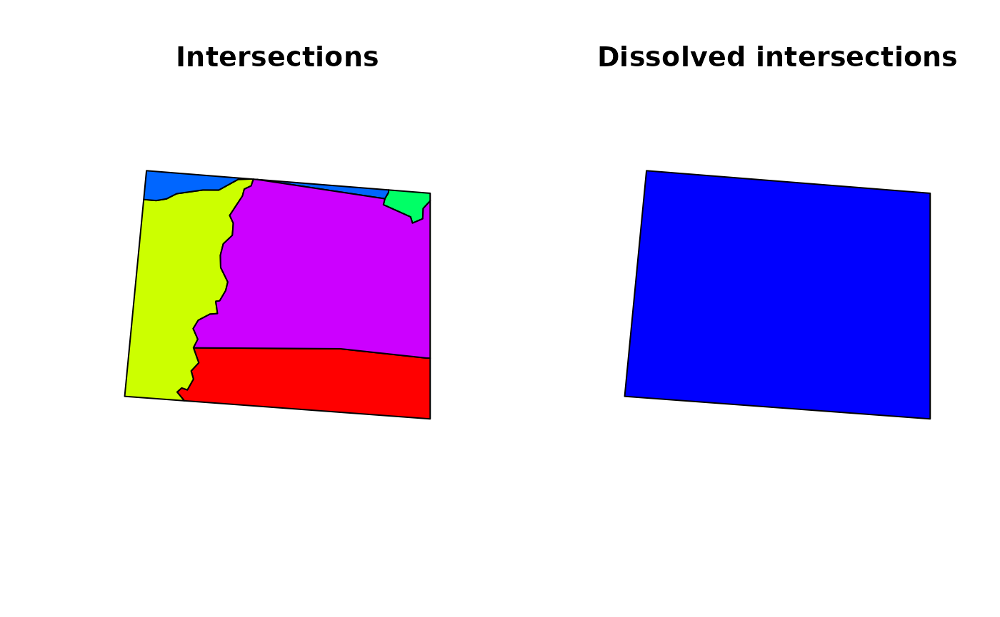
sf’s generic for summarize does the job for
us. In #1, we run summarize without specifying a variable
to summarize, and it returns a field-less (attribute-less) single
polygon (which is identical to pol, but not mapped). In #2,
we add a variable that is meaningful to summarize, which is the area of
the intersected districts. Our summary is the average area of those
intersected districts.
For a GIS person, it might be confusing to run a function called
summarize when you specifically want to do a dissolve operation.
Shouldn’t there be a function named that, or something close to it?
Well, there is one: st_union, which is actually called by
summarise.sf (which is called by the generic
summarize or summarise in the presence of an
sf object) by default. We can see its behavior here:
Same result, although in this case it produces a geometry set, and,
unlike summarize, st_union does not retain
information about the data values associated with the polygons.
Casting
Sometimes a spatial operation will result in mixed geometry types
within a single sf object, or a more complex geometry type
than you actually need. You might need to make all the geometries in the
object uniform (to prevent problems with other functions that don’t want
mixed geometry types), or simplify. Doing this is the job of
st_cast. Let’s look again at pol_int_dists
# Chunk 36
pol_int_dists
#> Simple feature collection with 5 features and 2 fields
#> Geometry type: GEOMETRY
#> Dimension: XY
#> Bounding box: xmin: 25 ymin: -15.6 xmax: 26.4 ymax: -14.5
#> Geodetic CRS: WGS 84
#> ID distName .
#> 1 1 Itezhi Tezhi POLYGON ((26.4 -15.6, 25.27...
#> 1.1 1 Kaoma POLYGON ((25.08724 -14.6275...
#> 1.2 1 Kasempa POLYGON ((26.4 -14.6, 26.4 ...
#> 1.3 1 Mufumbwe MULTIPOLYGON (((25.1 -14.5,...
#> 1.4 1 Mumbwa POLYGON ((25.60665 -14.5389...
rbcols <- rainbow(n = nrow(pol_int_dists))
par(mar = rep(0, 4))
pol_int_dists %>%
st_geometry %>%
plot(col = rbcols)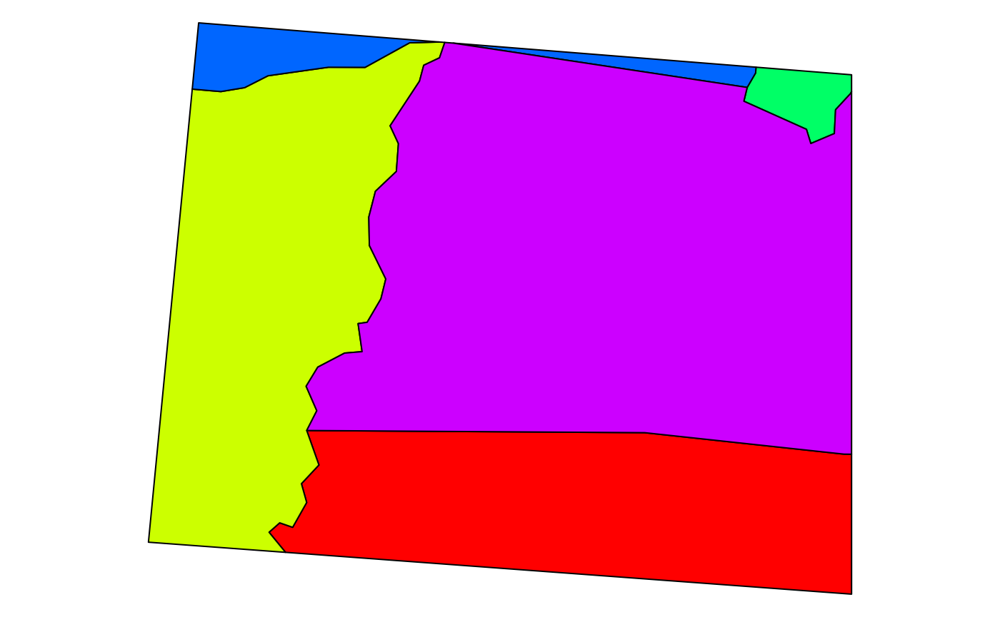
Notice how the object contains three polygons and one multipolygon,
which is the blue district (Mufumbwe), which needs to be MULTIPOLYGON
because the light green district (Kaoma) drives a wedge between it,
making it two pieces. Let’s run st_cast:
# Chunk 37
pol_int_dists %>% st_cast
#> Simple feature collection with 5 features and 2 fields
#> Geometry type: MULTIPOLYGON
#> Dimension: XY
#> Bounding box: xmin: 25 ymin: -15.6 xmax: 26.4 ymax: -14.5
#> Geodetic CRS: WGS 84
#> ID distName .
#> 1 1 Itezhi Tezhi MULTIPOLYGON (((26.4 -15.6,...
#> 1.1 1 Kaoma MULTIPOLYGON (((25.08724 -1...
#> 1.2 1 Kasempa MULTIPOLYGON (((26.4 -14.6,...
#> 1.3 1 Mufumbwe MULTIPOLYGON (((25.1 -14.5,...
#> 1.4 1 Mumbwa MULTIPOLYGON (((25.60665 -1...That converts all POLYGONS to MULTIPOLYGONs, the simplest common geometry type that can be shared by all 4 geometry features. One can also specify the type of geometry you want it to be:
# Chunk 38
pol_int_dists %>% st_cast("POLYGON")
#> Warning in st_cast.MULTIPOLYGON(X[[i]], ...): polygon from first part only
#> Simple feature collection with 5 features and 2 fields
#> Geometry type: POLYGON
#> Dimension: XY
#> Bounding box: xmin: 25 ymin: -15.6 xmax: 26.4 ymax: -14.5
#> Geodetic CRS: WGS 84
#> ID distName .
#> 1 1 Itezhi Tezhi POLYGON ((26.4 -15.6, 25.27...
#> 1.1 1 Kaoma POLYGON ((25.08724 -14.6275...
#> 1.2 1 Kasempa POLYGON ((26.4 -14.6, 26.4 ...
#> 1.3 1 Mufumbwe POLYGON ((25.1 -14.5, 25.57...
#> 1.4 1 Mumbwa POLYGON ((25.60665 -14.5389...It throws a warning, because Mufumbwe can’t be reduced to a POLYGON without jettisoning one of two pieces, so it let’s us know that it had to do that. We can see the result:
# Chunk 39
par(mfrow = c(1, 3), mar = c(0, 0, 1, 0))
pol_int_dists %>%
st_geometry %>%
plot(col = rbcols, main = "Uncast")
pol_int_dists %>%
st_cast() %>%
st_geometry %>%
plot(col = rbcols, main = "Cast to MULTIPOLYGON")
pol_int_dists %>%
st_cast("POLYGON") %>%
st_geometry %>%
plot(col = rbcols, main = "Cast to POLYGON")
#> Warning in st_cast.MULTIPOLYGON(X[[i]], ...): polygon from first part only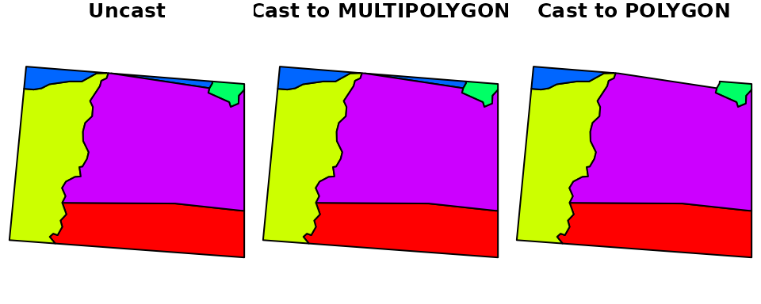
No difference between the original pol_int_dists and the
straight cast of it, but when we try cast to POLYGON, the top sliver of
the blue district disappears.
Plotting tip: note how we add titles to the plots and also tweak the margins to add space to the top margin so that those titles can be displayed.
We can also cast the polygons to lines, and even to points:
# Chunk 40
par(mfrow = c(1, 2), mar = c(0, 0, 1, 0))
pol_int_dists %>%
st_cast("MULTILINESTRING") %>%
st_geometry %>%
plot(col = rbcols, main = "Cast to MULTILINESTRING")
pol_int_dists %>%
st_cast("MULTIPOINT") %>%
st_geometry %>%
plot(col = rbcols, main = "Cast to MULTIPOINT", pch = 20)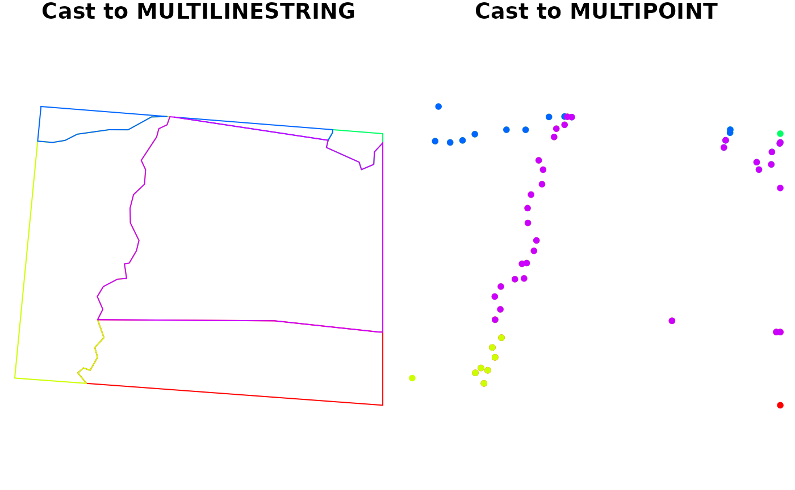
#> null device
#> 1So that’s st_cast. Not really a spatial operation
per se, but can be important for transitioning between spatial
operations, as indicated by this passage from sf’s 3rd
vignette:
When functions return objects with mixed geometry type (GEOMETRY), downstream functions such as st_write may have difficulty handling them. For some of these cases, st_cast may help modifying their type. For sets of geometry objects (sfc) and simple feature sets (sf),st_cast` can be used by specifying the target type, or without specifying it.
To learn more st_cast and its behavior, please read that
vignette.
Differencing
Now we are going to move on to look at another bread and butter operation, differencing (or erasing).
# Chunk 41
d1 <- st_difference(x = districts, y = pol)
#> although coordinates are longitude/latitude, st_difference assumes that they are planar
#> Warning: attribute variables are assumed to be spatially constant throughout all geometries
d2 <- st_difference(x = pol, y = districts)
#> although coordinates are longitude/latitude, st_difference assumes that they are planar
#> Warning: attribute variables are assumed to be spatially constant throughout all geometries
par(mfrow = c(1, 2), mar = c(0, 0, 1, 0))
d1 %>%
st_geometry %>%
plot(col = "grey")
d2 %>%
st_geometry %>%
plot(col = "grey")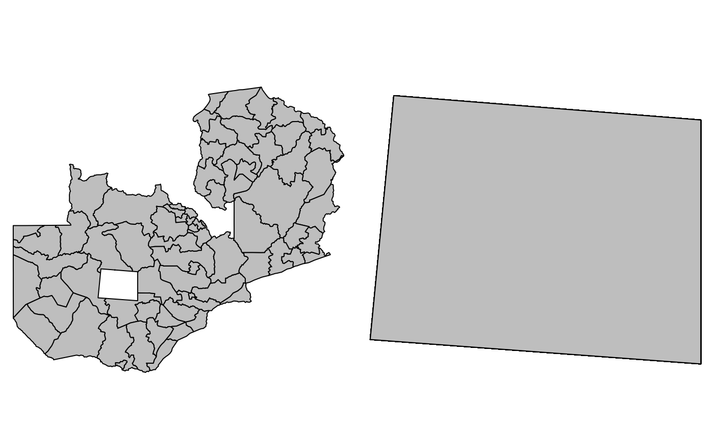
d1 erases pol, leaving a hole, whereas
d2, by reversing the order of objects into the “x” and “y”
arguments, does the same thing as an intersection, by erasing all the
districts surrounding pol.
Unioning
We have already seen st_union in action to dissolve
internal polygon boundaries. Now let’s look at unioning two objects.
# Chunk 42
# #1
uni1 <- st_union(x = pol, y = districts)
#> although coordinates are longitude/latitude, st_union assumes that they are planar
#> Warning: attribute variables are assumed to be spatially constant throughout all geometries
uni1
#> Simple feature collection with 72 features and 2 fields
#> Geometry type: GEOMETRY
#> Dimension: XY
#> Bounding box: xmin: 21.99978 ymin: -18.0751 xmax: 33.6875 ymax: -8.226213
#> Geodetic CRS: WGS 84
#> First 10 features:
#> ID distName .
#> 1 1 Chadiza MULTIPOLYGON (((25 -15.5, 2...
#> 1.1 1 Chama MULTIPOLYGON (((25 -15.5, 2...
#> 1.2 1 Chavuma MULTIPOLYGON (((25 -15.5, 2...
#> 1.3 1 Chibombo MULTIPOLYGON (((25 -15.5, 2...
#> 1.4 1 Chiengi MULTIPOLYGON (((25 -15.5, 2...
#> 1.5 1 Chililabombwe MULTIPOLYGON (((25 -15.5, 2...
#> 1.6 1 Chilubi MULTIPOLYGON (((25 -15.5, 2...
#> 1.7 1 Chingola MULTIPOLYGON (((25 -15.5, 2...
#> 1.8 1 Chinsali MULTIPOLYGON (((25 -15.5, 2...
#> 1.9 1 Chipata MULTIPOLYGON (((25 -15.5, 2...
#
# #2
uni2 <- st_union(x = districts, y = pol)
#> although coordinates are longitude/latitude, st_union assumes that they are planar
#> Warning: attribute variables are assumed to be spatially constant throughout all geometries
uni2
#> Simple feature collection with 72 features and 2 fields
#> Geometry type: GEOMETRY
#> Dimension: XY
#> Bounding box: xmin: 21.99978 ymin: -18.0751 xmax: 33.6875 ymax: -8.226213
#> Geodetic CRS: WGS 84
#> First 10 features:
#> distName ID geometry
#> 1 Chadiza 1 MULTIPOLYGON (((32.3076 -14...
#> 2 Chama 1 MULTIPOLYGON (((33.6875 -10...
#> 3 Chavuma 1 MULTIPOLYGON (((22.00014 -1...
#> 4 Chibombo 1 MULTIPOLYGON (((28.89229 -1...
#> 5 Chiengi 1 MULTIPOLYGON (((29.1088 -9....
#> 6 Chililabombwe 1 MULTIPOLYGON (((28.06755 -1...
#> 7 Chilubi 1 MULTIPOLYGON (((30.61853 -1...
#> 8 Chingola 1 MULTIPOLYGON (((27.51766 -1...
#> 9 Chinsali 1 MULTIPOLYGON (((32.34814 -9...
#> 10 Chipata 1 MULTIPOLYGON (((32.95348 -1...
#
# #3
par(mfrow = c(1, 2), mar = c(0, 0, 1, 0))
plot(uni1[2], reset = FALSE, main = "Union of pol with districts")
plot(uni2[2], reset = FALSE, main = "Union of districts with pol")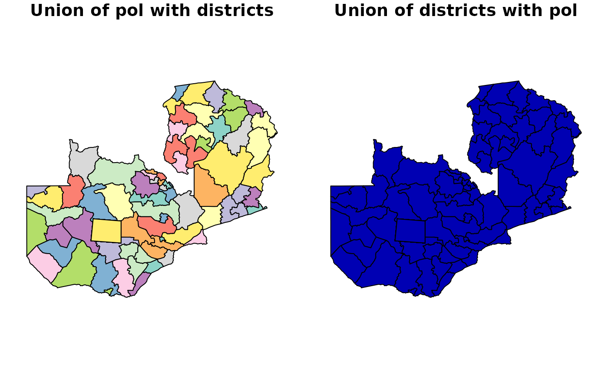
Two different order to unioning pol and
districts (#1 and #2). The ordering simply results in the
ordering of the attribute fields in the resulting unioned datasets (the
fields from the object in the “x” argument appear first) after the
overlapping polygons are merged. You can see the difference in the
ordering in the resulting plots (#3), in which for the first time we use
index notation to specify the field of each object that we want the plot
to render. In this case, we select the second field, which is different
in each unioned object, hence the different fill patterns. This
index-based referencing is a good way to avoid having to use
st_geometry, while letting sf::plot do the
work of selecting a color scheme.
Buffering
This is a fairly common GIS operation that sf handles
nicely.
# Chunk 43
#
# #1
farmers_alb <- farmers %>% st_transform(st_crs(roads))
long_roads <- roads %>% filter(as.numeric(st_length(.)) > 500000)
districts_alb <- districts %>% st_transform(st_crs(roads))
# #2
buffs <- lapply(c(10000, 20000, 30000), function(x) {
set.seed(123)
#2a
buf_farmers <- farmers_alb %>% filter(season == 2) %>%
st_sample(size = 5) %>% st_buffer(dist = x) # here is the buffer
#2b
buf_roads <- long_roads %>% st_buffer(dist = x) # here is the buffer
#2c
list("farmers" = buf_farmers, "roads" = buf_roads)
})
#
# using purrr::map
# buffs <- c(10000, 20000, 30000) %>% map(function(x) {
# set.seed(123)
# #2a
# buf_farmers <- farmers_alb %>% filter(season == 2) %>%
# st_sample(size = 5) %>% st_buffer(dist = x)
# #2b
# buf_roads <- long_roads %>% st_buffer(dist = x)
# list("farmers" = buf_farmers, "roads" = buf_roads)
# })
#
# #3
par(mar = c(0, 0, 0, 0))
cols <- c("cyan", "blue2", "orange") # 2
cols2 <- c("purple", "green4", "antiquewhite")
districts_alb %>% st_union %>% plot(col = "grey")
for(i in length(buffs):1) { # 4
plot(buffs[[i]]$roads, add = TRUE, col = cols2[i]) # 6
plot(buffs[[i]]$farmers, add = TRUE, col = cols[i]) # 5
}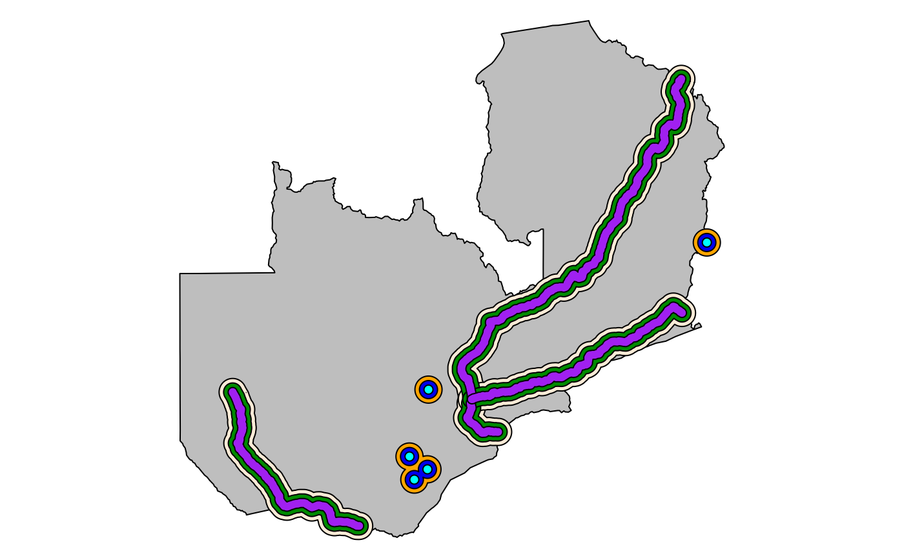
A fair bit of code up there, so let’s walk through it. In #1 we
convert farmers and districts to Albers
projections, as buffers should be specified in meters, not decimal
degrees, which one would have to do if buffering on a GCS project. We
also extract from roads the segments that are longer than
500 km. In #2, we then insert our buffering step into an
lapply, as we apply three different buffer widths (10, 20,
and 30 km), specified in meters (the unit of the Albers projection) into
st_buffer. We first buffer around 5 randomly selected
farmers from the second season, using st_sample instead of
sample_n (which we did previously), because it allows
merging of buffers where they touch, whereas a sample drawn with
sample_n would apply a separate buffer to each point. We
then apply st_buffer to the selected roads. The commented
out chunk of code shows how we can use purrr::map to do the
same work as lapply, using piping to pass the iteration
vector into the map function (you can also write it that
way for lapply).
In #3 we draw the plots, setting up an outline of Zambia by
dissolving district boundaries, then plotting the buffered shapes in a
for loop (note the reversed index ordering, to plot from
largest to smallest buffers).
Sampling
We have seen a little bit of sampling already, but the previous examples just sample from the features in an existing object. Sometimes you might be interested in confining the sample to a particular feature or features, for example:
# Chunk 44
par(mar = rep(0, 4))
districts %>%
st_union %>%
plot(col = "grey")
set.seed(1)
districts %>%
st_union %>%
st_sample(size = 100, exact = TRUE) %>%
plot(pch = 20, add = TRUE)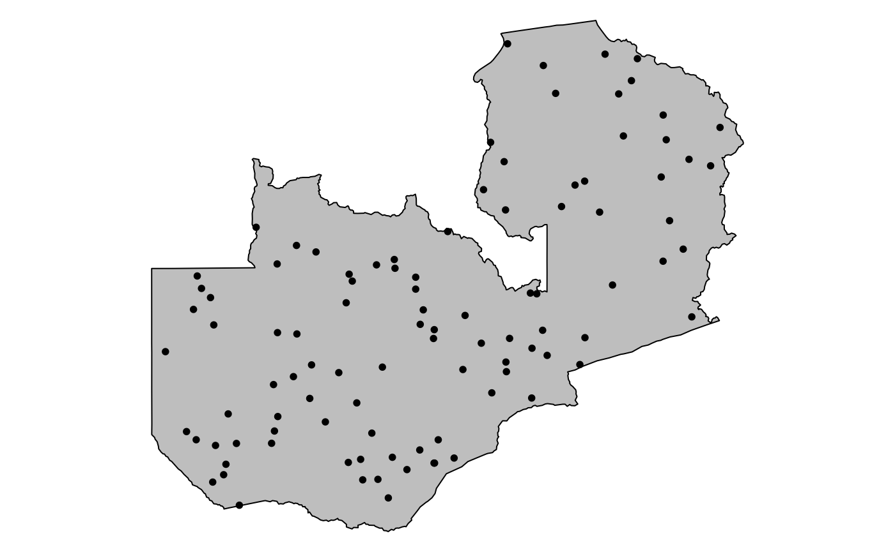
That uses st_sample to pull a random sample of 100
points from within the merged district. We set the
exact = TRUE argument to force the returned sample to be
the exact number we specify (otherwise it can sometimes be a bit
less).
Let’s look at this in a bit more depth:
# Chunk 45
# #1
seed <- 40
set.seed(seed)
dists_7 <- districts %>% sample_n(7)
#
# #2
set.seed(seed)
samp14 <- dists_7 %>% st_sample(size = 14, exact = TRUE)
#
# #3
set.seed(seed)
samp7_2 <- dists_7 %>% st_sample(size = rep(2, nrow(dists_7)), exact = TRUE)
par(mar = rep(0, 4))
districts[2] %>% plot(col = "grey", reset = FALSE)
dists_7 %>% plot(col = "khaki", add = TRUE)
samp14 %>% plot(col = "red", pch = 20, add = TRUE)
samp7_2 %>% plot(col = "blue", pch = "+", add = TRUE)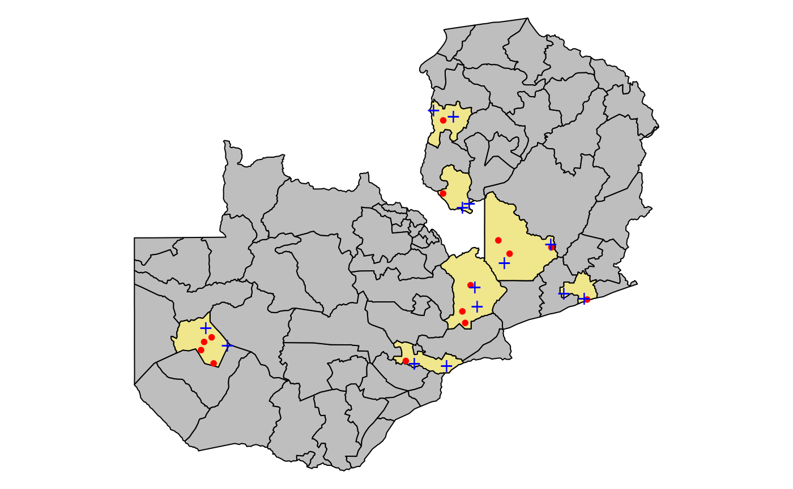
In #1 we start by randomly selecting 7 districts from
districts (using sample_n). We then use
st_sample to randomly select 14 points from within those 7
randomly selected districts (#2). In #3, we specify that we want to
randomly select 2 points within each of the 7 districts–to do that, we
create a vector containing 2 repeated as many times as there are rows in
dists_7, so the sample size is specified for each of the 7
sampled districts. The output plots show the differences between the two
sampling strategies. The approach used in #2 distributes an unequal
number of points across the 7 districts, and misses one district
entirely. The approach in #3 places two points in each of the 7
districts. It is not hard to see that one could go from here to create a
stratified random sample in which the size was made proportional to each
district’s area.
So that’s it for this unit, which has given a brief and by no means exhaustive introduction to do some common vector operations and ways in which vector data are manipulated.
Practice
Questions
Why it is the purpose of
st_cast, and why might we need to cast features?What spatial operation occurs when
summarizeis applied to ansfobject?In what way does the order of unioning affect the result of
st_unionon two spatial objects?
Code
- Using the code in Chunk 32 as your template, create a rectangular
sfpolygon calledpol2using the x coordinates 27 and 27.5 (minimum and maximum) and y coordinates -13 and -13.5. Coordinates vectors should be ordered like this for x: xmin, xmax, xmax, xmin, xmin. And for y: ymin, ymin, ymax, ymax, ymin. In both cases, think of min and max in absolute terms (i.e. drop the negative sign). Plot the result on top ofdistrictsin blue. It should look like this:
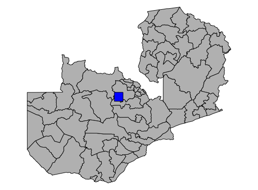
Use your new
pol2to do anst_intersectionwithdistricts. Call itpol2_int_dists. Plot it using rainbow colors on top of greydistricts.Calculate the difference between 1) the sum of areas calculated from
pol2_int_distsand 2) the area ofpol2.Use
st_differenceto create apol2sized hole indistricts. Do the difference on the fly (i.e. don’t save it), and pipe the result toplot(col = "grey")From Chunk 43, recreate
farmers_alb, and use the code in #2a to recreate buffers of 30 km width around the 5 randomly selected farmer points, and plot those. Recreate the buffers, but usesample_nto do the random draw. Plot those and compare the difference.Select from
roadsthe roads that are greater than 400 km long, and save the result inroads_gt400. Place a 25 km buffer around those roads. Plot the result over the Albers-projected districts (in grey) in green.Select a random sample of exactly 20 points within each of the 25 km buffers around
roads_gt400. Plot the resulting points as red circles over the tan buffered roads and grey districts.
Unit assignment
Set-up
Make sure you are working in the master branch of your project (you should not be working on the a3 branch). Create a new vignette named “unit2-module1.Rmd”. You will use this to document the tasks you undertake for this assignment.
There are no package functions to create for this assignment. All work is to be done in the vignette.
Vignette tasks
Read in the
farmers_spatial.csv,districts.geojson, androads.geojsondatasets. Reduce the size of the farmers data by first selecting distinct observations by uuid, x, y, season, i.e. usedistinct(uuid, x, y, season). After that convert it to ansfobject. Reproject the farmers and districts data to Albers projection (using the CRS from roads), naming eachfarmers_albanddistricts_alb. Ideally (worth an extra 0.5 points) you will do all the necessary steps to createfarmers_albanddistricts_albin one pipeline.Create a plot using
sf::plotthat shows all three datasets on one map, withdistricts_albin grey, withroadsin red over that, andfarmers_albas a blue cross over that. Use the relevant chunk arguments to center the figure in the vignette html, and to have a height of 4 inches and a width of 6 inches. The figure should have 0 margins all around.Make the same plot above using
ggplotandgeom_sf. When addingfarmers_albto the plot, usepch = "+"andsize = 3as arguments togeom_sf. Add the functiontheme_bw()to theggplotconstruction chain, to get rid of the grey background. Make the “fill” (rather than “color”) ofdistricts_albgrey. Center the figure using chunk options and make the figure width 5 inches and height 6 inches.Select from
districts_albthe district representing the 50th percentile area, i.e. the median area, and save that district into a new objectmedian_dist. Plot it in “khaki” on top of greydistricts_alb. Give the plot a title “The median area district”. Same plot dimensions in the vignette html as for Task 2, but a leave a space of 1 at the top in the plotmar.Convert the
median_distto its centroid point. Call itmedian_distp.filterthefarmers_albdata for season 1, and then find the 20 closest season 1 farmers tomedian_distp. To do that, create the new objectclosest_20farmersby usingmutatewithst_distanceto create a new variable dist (convert it to numeric), and thenarrangeby variable dist and slice out the top 20 observations. Plotdistricts_albin grey,median_distover that in khaki,median_distpas a solid purple circle,farmers_albin blue, andclosest_20farmersin red. Zero margins and width of 6 inches and height of 4 inches.Create a rectangular
sfpolygon calledmypolusing the x coordinates 30 and 31 (minimum and maximum) and y coordinates -10 and -11. Assign itcrs = 4326and transform it to Albers. Select fromdistricts_albthe districts that intersectmypol, and plot in “grey40” overdistricts_albin grey, and plot over thatmypolwithout any fill but just a yellow border. Calculate the area in ha ofmypoland report it in your vignette below this plot. Zero margins and width of 6 inches and height of 4 inches.Create
mypol_dist_intfrom the intersection ofmypolanddistricts_alb, recasting the intersected districts to multipolygons, and adding an area variable onto it that reports areas of intersections in hectares. Do all that in one pipeline. Plotmypol_dist_intin rainbow colors overdistricts_alb. Zero margins and width of 6 inches and height of 4 inches. Report the mean and median of interections in the vignette below the plot.Find the shortest and longest roads in Zambia, and place the selected roads into a new object (
roads_extreme). To do this, you will need toarrangeroadsby length and thensliceto get the first and last observations (of course you need to first calculate length). Do that as one pipeline. Then calculate a 50 km buffer around those two roads (roads_extreme_buff). Plotroads_extreme_buffin blue overdistricts_albin grey, and addroads_extremeon top of that as red lines (uselwd = 3in the plot). Zero margins and width of 6 inches and height of 4 inches.Select a random sample of 10 points in the smallest object in
roads_extreme_buff, and one of 50 in the largest object. Use a single call tost_sampleto do that. Use a seed of 2. Plot those points as yellow solid points over the same map created in Task 8 above. Use the same dimensions.Your final task is to intersect
roadswith the buffer of the longest road inroads_extreme_buff(roads_int). Plot the buffer of the longest road in blue over the districts in grey, and thenroads_intas red lines. Use the same dimensions as the previous two plots. Report the total distance of intersected roads in km in the vignette below the plot.
Assignment output
Refer to Unit 1 Module 4’s assignment output section for submission instructions. The only differences are as follows:
- Your submission should be on a new side branch “a4”;
- You should increment your package version number by 1 on the lowest number (e.g. from 0.0.1 to 0.0.2) in the DESCRIPTION;
- Do not worry about #3 in those instructions
- When asked to report the result of calculations in the vignette text (e.g. in Task 10), you can use another RMarkdown trick, which is to let the calculation be done by code inserted between a single pair of backticks, with the first backtick followed immediately by r and a space. See here for more explanation of that.